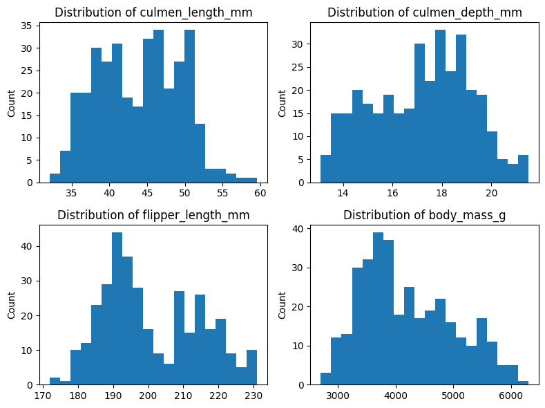

LOCAL_MODE = TrueBuilding Production Machine Learning Systems
This notebook creates a SageMaker Pipeline to build an end-to-end Machine Learning system to solve the problem of classifying penguin species. With a SageMaker Pipeline, you can create, automate, and manage end-to-end Machine Learning workflows at scale.
You can find more information about Amazon SageMaker in the Amazon SageMaker Developer Guide. The AWS Machine Learning Blog is an excellent source to stay up-to-date with SageMaker.
This example uses the Penguins dataset, the boto3 library, and the SageMaker Python SDK.

This notebook is part of the Machine Learning School program.
Initial setup
Note
Before running this notebook, follow the Setup Instructions for the program.
Let’s start by setting up the environment and preparing to run the notebook.
We can run this notebook in Local Mode to test the pipeline in your local environment before using SageMaker. You can run the code in Local Mode by setting the LOCAL_MODE constant to True.
Let’s load the S3 bucket name and the AWS Role from the environment variables:
import os
bucket = os.environ["BUCKET"]
role = os.environ["ROLE"]
S3_LOCATION = f"s3://{bucket}/penguins"If you are running the pipeline in Local Mode on an ARM64 machine, you will need to use a custom Docker image to train and evaluate the model. This is because SageMaker doesn’t provide a TensorFlow image that supports Apple’s M chips.
architecture = !(uname -m)
IS_APPLE_M_CHIP = architecture[0] == "arm64"Let’s create a configuration dictionary with different settings depending on whether we are running the pipeline in Local Mode or not:
import sagemaker
from sagemaker.workflow.pipeline_context import PipelineSession, LocalPipelineSession
pipeline_session = PipelineSession(default_bucket=bucket) if not LOCAL_MODE else None
if LOCAL_MODE:
config = {
"session": LocalPipelineSession(default_bucket=bucket),
"instance_type": "local", # specify the compute power we need based on the job we are running
# We need to use a custom Docker image when we run the pipeline
# in Local Model on an ARM64 machine.
"image": "sagemaker-tensorflow-toolkit-local" if IS_APPLE_M_CHIP else None,
}
else:
config = {
"session": pipeline_session,
"instance_type": "ml.m5.xlarge", # can be changed as per the need
"image": None,
}
config["framework_version"] = "2.11"
config["py_version"] = "py39"Windows Support for Local Mode is ExperimentalLet’s now initialize a few variables that we’ll need throughout the notebook:
# boto3 is AWS's API that helps us to access anything on AWS
import boto3
sagemaker_session = sagemaker.session.Session()
# access sagemaker client
sagemaker_client = boto3.client("sagemaker")
# authentication and authorization for AWS services
iam_client = boto3.client("iam")
region = boto3.Session().region_nameSession 1 - Production Machine Learning is Different
In this session we’ll run Exploratory Data Analysis on the Penguins dataset and we’ll build a simple SageMaker Pipeline with one step to split and transform the data.

We’ll use a Scikit-Learn Pipeline for the transformations, and a Processing Step with a SKLearnProcessor to execute a preprocessing script. Check the SageMaker Pipelines Overview for an introduction to the fundamental components of a SageMaker Pipeline.
Step 1 - Exploratory Data Analysis
Let’s run Exploratory Data Analysis on the dataset. The goal of this section is to understand the data and the problem we are trying to solve.
Let’s load the Penguins dataset:
import pandas as pd
import numpy as np
penguins = pd.read_csv(DATA_FILEPATH)
penguins.head()| species | island | culmen_length_mm | culmen_depth_mm | flipper_length_mm | body_mass_g | sex | |
|---|---|---|---|---|---|---|---|
| 0 | Adelie | Torgersen | 39.1 | 18.7 | 181.0 | 3750.0 | MALE |
| 1 | Adelie | Torgersen | 39.5 | 17.4 | 186.0 | 3800.0 | FEMALE |
| 2 | Adelie | Torgersen | 40.3 | 18.0 | 195.0 | 3250.0 | FEMALE |
| 3 | Adelie | Torgersen | NaN | NaN | NaN | NaN | NaN |
| 4 | Adelie | Torgersen | 36.7 | 19.3 | 193.0 | 3450.0 | FEMALE |
We can see the dataset contains the following columns:
species: The species of a penguin. This is the column we want to predict.island: The island where the penguin was foundculmen_length_mm: The length of the penguin’s culmen (bill) in millimetersculmen_depth_mm: The depth of the penguin’s culmen in millimetersflipper_length_mm: The length of the penguin’s flipper in millimetersbody_mass_g: The body mass of the penguin in gramssex: The sex of the penguin
If you are curious, here is the description of a penguin’s culmen:
Now, let’s get the summary statistics for the features in our dataset.
penguins.describe(include="all")| species | island | culmen_length_mm | culmen_depth_mm | flipper_length_mm | body_mass_g | sex | |
|---|---|---|---|---|---|---|---|
| count | 344 | 344 | 342.000000 | 342.000000 | 342.000000 | 342.000000 | 334 |
| unique | 3 | 3 | NaN | NaN | NaN | NaN | 3 |
| top | Adelie | Biscoe | NaN | NaN | NaN | NaN | MALE |
| freq | 152 | 168 | NaN | NaN | NaN | NaN | 168 |
| mean | NaN | NaN | 43.921930 | 17.151170 | 200.915205 | 4201.754386 | NaN |
| std | NaN | NaN | 5.459584 | 1.974793 | 14.061714 | 801.954536 | NaN |
| min | NaN | NaN | 32.100000 | 13.100000 | 172.000000 | 2700.000000 | NaN |
| 25% | NaN | NaN | 39.225000 | 15.600000 | 190.000000 | 3550.000000 | NaN |
| 50% | NaN | NaN | 44.450000 | 17.300000 | 197.000000 | 4050.000000 | NaN |
| 75% | NaN | NaN | 48.500000 | 18.700000 | 213.000000 | 4750.000000 | NaN |
| max | NaN | NaN | 59.600000 | 21.500000 | 231.000000 | 6300.000000 | NaN |
Let’s now display the distribution of values for the three categorical columns in our data:
species_distribution = penguins["species"].value_counts()
island_distribution = penguins["island"].value_counts()
sex_distribution = penguins["sex"].value_counts()
print(species_distribution)
print()
print(island_distribution)
print()
print(sex_distribution)Adelie 152
Gentoo 124
Chinstrap 68
Name: species, dtype: int64
Biscoe 168
Dream 124
Torgersen 52
Name: island, dtype: int64
MALE 168
FEMALE 165
. 1
Name: sex, dtype: int64The distribution of the categories in our data are:
species: There are 3 species of penguins in the dataset: Adelie (152), Gentoo (124), and Chinstrap (68).island: Penguins are from 3 islands: Biscoe (168), Dream (124), and Torgersen (52).sex: We have 168 male penguins, 165 female penguins, and 1 penguin with an ambiguous gender (.).
Let’s replace the ambiguous value in the sex column with a null value:
penguins["sex"] = penguins["sex"].replace(".", np.nan)
sex_distribution = penguins["sex"].value_counts()
sex_distributionsex
MALE 168
FEMALE 165
Name: count, dtype: int64Next, let’s check for any missing values in the dataset.
penguins.isnull().sum()species 0
island 0
culmen_length_mm 2
culmen_depth_mm 2
flipper_length_mm 2
body_mass_g 2
sex 11
dtype: int64Let’s get rid of the missing values. For now, we are going to replace the missing values with the most frequent value in the column. Later, we’ll use a different strategy to replace missing numeric values.
from sklearn.impute import SimpleImputer
imputer = SimpleImputer(strategy="most_frequent")
penguins.iloc[:, :] = imputer.fit_transform(penguins)
penguins.isnull().sum()species 0
island 0
culmen_length_mm 0
culmen_depth_mm 0
flipper_length_mm 0
body_mass_g 0
sex 0
dtype: int64Let’s visualize the distribution of categorical features.
import matplotlib.pyplot as plt
fig, axs = plt.subplots(3, 1, figsize=(6, 10))
axs[0].bar(species_distribution.index, species_distribution.values)
axs[0].set_ylabel("Count")
axs[0].set_title("Distribution of Species")
axs[1].bar(island_distribution.index, island_distribution.values)
axs[1].set_ylabel("Count")
axs[1].set_title("Distribution of Island")
axs[2].bar(sex_distribution.index, sex_distribution.values)
axs[2].set_ylabel("Count")
axs[2].set_title("Distribution of Sex")
plt.tight_layout()
plt.show()
Let’s visualize the distribution of numerical columns.
fig, axs = plt.subplots(2, 2, figsize=(8, 6))
axs[0, 0].hist(penguins["culmen_length_mm"], bins=20)
axs[0, 0].set_ylabel("Count")
axs[0, 0].set_title("Distribution of culmen_length_mm")
axs[0, 1].hist(penguins["culmen_depth_mm"], bins=20)
axs[0, 1].set_ylabel("Count")
axs[0, 1].set_title("Distribution of culmen_depth_mm")
axs[1, 0].hist(penguins["flipper_length_mm"], bins=20)
axs[1, 0].set_ylabel("Count")
axs[1, 0].set_title("Distribution of flipper_length_mm")
axs[1, 1].hist(penguins["body_mass_g"], bins=20)
axs[1, 1].set_ylabel("Count")
axs[1, 1].set_title("Distribution of body_mass_g")
plt.tight_layout()
plt.show()
Let’s display the covariance matrix of the dataset. The “covariance” measures how changes in one variable are associated with changes in a second variable. In other words, the covariance measures the degree to which two variables are linearly associated.
penguins.cov(numeric_only=True)| culmen_length_mm | culmen_depth_mm | flipper_length_mm | body_mass_g | |
|---|---|---|---|---|
| culmen_length_mm | 29.679415 | -2.516984 | 50.260588 | 2596.971151 |
| culmen_depth_mm | -2.516984 | 3.877201 | -16.108849 | -742.660180 |
| flipper_length_mm | 50.260588 | -16.108849 | 197.269501 | 9792.552037 |
| body_mass_g | 2596.971151 | -742.660180 | 9792.552037 | 640316.716388 |
Here are three examples of what we get from interpreting the covariance matrix below:
- Penguins that weight more tend to have a larger culmen.
- The more a penguin weights, the shallower its culmen tends to be.
- There’s a small variance between the culmen depth of penguins.
Let’s now display the correlation matrix. “Correlation” measures both the strength and direction of the linear relationship between two variables.
penguins.corr(numeric_only=True)| culmen_length_mm | culmen_depth_mm | flipper_length_mm | body_mass_g | |
|---|---|---|---|---|
| culmen_length_mm | 1.000000 | -0.234635 | 0.656856 | 0.595720 |
| culmen_depth_mm | -0.234635 | 1.000000 | -0.582472 | -0.471339 |
| flipper_length_mm | 0.656856 | -0.582472 | 1.000000 | 0.871302 |
| body_mass_g | 0.595720 | -0.471339 | 0.871302 | 1.000000 |
Here are three examples of what we get from interpreting the correlation matrix below:
- Penguins that weight more tend to have larger flippers.
- Penguins with a shallower culmen tend to have larger flippers.
- The length and depth of the culmen have a slight negative correlation.
Let’s display the distribution of species by island.
unique_species = penguins["species"].unique()
fig, ax = plt.subplots(figsize=(6, 6))
for species in unique_species:
data = penguins[penguins["species"] == species]
ax.hist(data["island"], bins=5, alpha=0.5, label=species)
ax.set_xlabel("Island")
ax.set_ylabel("Count")
ax.set_title("Distribution of Species by Island")
ax.legend()
plt.show()
Let’s display the distribution of species by sex.
fig, ax = plt.subplots(figsize=(6, 6))
for species in unique_species:
data = penguins[penguins["species"] == species]
ax.hist(data["sex"], bins=3, alpha=0.5, label=species)
ax.set_xlabel("Sex")
ax.set_ylabel("Count")
ax.set_title("Distribution of Species by Sex")
ax.legend()
plt.show()
Step 2 - Creating the Preprocessing Script
Here’s a high-level overview of the preprocessing step and the Processing Job that SageMaker creates behind the scenes:

The first step we need in the pipeline is a Processing Step to run a script that will split and transform the data. This Processing Step will create a SageMaker Processing Job in the background, run the script, and upload the output to S3. You can use Processing Jobs to perform data preprocessing, post-processing, feature engineering, data validation, and model evaluation. Check the ProcessingStep SageMaker’s SDK documentation for more information.
The first step is to create the script that will split and transform the input data.
preprocessor.py
import os
import tarfile
import tempfile
import joblib
import numpy as np
import pandas as pd
from pathlib import Path
from sklearn.compose import ColumnTransformer, make_column_selector
from sklearn.impute import SimpleImputer
from sklearn.pipeline import make_pipeline
from sklearn.model_selection import train_test_split
from sklearn.preprocessing import OneHotEncoder, StandardScaler, OrdinalEncoder
def preprocess(base_directory):
"""
This function loads the supplied data, splits it and transforms it.
"""
df = _read_data_from_input_csv_files(base_directory)
target_transformer = ColumnTransformer(
transformers=[("species", OrdinalEncoder(), [0])]
)
numeric_transformer = make_pipeline(
SimpleImputer(strategy="mean"),
StandardScaler()
)
categorical_transformer = make_pipeline(
SimpleImputer(strategy="most_frequent"),
OneHotEncoder()
)
features_transformer = ColumnTransformer(
transformers=[
("numeric", numeric_transformer, make_column_selector(dtype_exclude="object")),
("categorical", categorical_transformer, ["island"]),
]
)
df_train, df_validation, df_test = _split_data(df)
_save_baselines(base_directory, df_train, df_test)
y_train = target_transformer.fit_transform(np.array(df_train.species.values).reshape(-1, 1))
y_validation = target_transformer.transform(np.array(df_validation.species.values).reshape(-1, 1))
y_test = target_transformer.transform(np.array(df_test.species.values).reshape(-1, 1))
df_train = df_train.drop("species", axis=1)
df_validation = df_validation.drop("species", axis=1)
df_test = df_test.drop("species", axis=1)
X_train = features_transformer.fit_transform(df_train)
X_validation = features_transformer.transform(df_validation)
X_test = features_transformer.transform(df_test)
_save_splits(base_directory, X_train, y_train, X_validation, y_validation, X_test, y_test)
_save_model(base_directory, target_transformer, features_transformer)
def _read_data_from_input_csv_files(base_directory):
"""
This function reads every CSV file available and concatenates
them into a single dataframe.
"""
input_directory = Path(base_directory) / "input"
files = [file for file in input_directory.glob("*.csv")]
if len(files) == 0:
raise ValueError(f"The are no CSV files in {str(input_directory)}/")
raw_data = [pd.read_csv(file) for file in files]
df = pd.concat(raw_data)
# Shuffle the data
return df.sample(frac=1, random_state=42)
def _split_data(df):
"""
Splits the data into three sets: train, validation and test.
"""
df_train, temp = train_test_split(df, test_size=0.3)
df_validation, df_test = train_test_split(temp, test_size=0.5)
return df_train, df_validation, df_test
def _save_baselines(base_directory, df_train, df_test):
"""
During the data and quality monitoring steps, we will need baselines
to compute constraints and statistics. This function saves the
untransformed data to disk so we can use them as baselines later.
"""
for split, data in [("train", df_train), ("test", df_test)]:
baseline_path = Path(base_directory) / f"{split}-baseline"
baseline_path.mkdir(parents=True, exist_ok=True)
df = data.copy().dropna()
# We want to save the header only for the train baseline
# but not for the test baseline. We'll use the test baseline
# to generate predictions later, and we can't have a header line
# because the model won't be able to make a prediction for it.
header = split == "train"
df.to_csv(baseline_path / f"{split}-baseline.csv", header=header, index=False)
def _save_splits(base_directory, X_train, y_train, X_validation, y_validation, X_test, y_test):
"""
This function concatenates the transformed features and the target variable, and
saves each one of the split sets to disk.
"""
train = np.concatenate((X_train, y_train), axis=1)
validation = np.concatenate((X_validation, y_validation), axis=1)
test = np.concatenate((X_test, y_test), axis=1)
train_path = Path(base_directory) / "train"
validation_path = Path(base_directory) / "validation"
test_path = Path(base_directory) / "test"
train_path.mkdir(parents=True, exist_ok=True)
validation_path.mkdir(parents=True, exist_ok=True)
test_path.mkdir(parents=True, exist_ok=True)
pd.DataFrame(train).to_csv(train_path / "train.csv", header=False, index=False)
pd.DataFrame(validation).to_csv(validation_path / "validation.csv", header=False, index=False)
pd.DataFrame(test).to_csv(test_path / "test.csv", header=False, index=False)
def _save_model(base_directory, target_transformer, features_transformer):
"""
This function creates a model.tar.gz file that contains the two transformation
pipelines we built to transform the data.
"""
with tempfile.TemporaryDirectory() as directory:
joblib.dump(target_transformer, os.path.join(directory, "target.joblib"))
joblib.dump(features_transformer, os.path.join(directory, "features.joblib"))
model_path = Path(base_directory) / "model"
model_path.mkdir(parents=True, exist_ok=True)
with tarfile.open(f"{str(model_path / 'model.tar.gz')}", "w:gz") as tar:
tar.add(os.path.join(directory, "target.joblib"), arcname="target.joblib")
tar.add(os.path.join(directory, "features.joblib"), arcname="features.joblib")
if __name__ == "__main__":
preprocess(base_directory="/opt/ml/processing")Let’s test the script to ensure everything is working as expected:
Code
import os
import shutil
import tarfile
import pytest
import tempfile
import joblib
from preprocessor import preprocess
@pytest.fixture(scope="function", autouse=False)
def directory():
directory = tempfile.mkdtemp()
input_directory = Path(directory) / "input"
input_directory.mkdir(parents=True, exist_ok=True)
shutil.copy2(DATA_FILEPATH, input_directory / "data.csv")
directory = Path(directory)
preprocess(base_directory=directory)
yield directory
shutil.rmtree(directory)
def test_preprocess_generates_data_splits(directory):
output_directories = os.listdir(directory)
assert "train" in output_directories
assert "validation" in output_directories
assert "test" in output_directories
def test_preprocess_generates_baselines(directory):
output_directories = os.listdir(directory)
assert "train-baseline" in output_directories
assert "test-baseline" in output_directories
def test_preprocess_creates_two_models(directory):
model_path = directory / "model"
tar = tarfile.open(model_path / "model.tar.gz", "r:gz")
assert "features.joblib" in tar.getnames()
assert "target.joblib" in tar.getnames()
def test_splits_are_transformed(directory):
train = pd.read_csv(directory / "train" / "train.csv", header=None)
validation = pd.read_csv(directory / "validation" / "validation.csv", header=None)
test = pd.read_csv(directory / "test" / "test.csv", header=None)
# After transforming the data, the number of features should be 7:
# * 3 - island (one-hot encoded)
# * 1 - culmen_length_mm = 1
# * 1 - culmen_depth_mm
# * 1 - flipper_length_mm
# * 1 - body_mass_g
number_of_features = 7
# The transformed splits should have an additional column for the target
# variable.
assert train.shape[1] == number_of_features + 1
assert validation.shape[1] == number_of_features + 1
assert test.shape[1] == number_of_features + 1
def test_train_baseline_is_not_transformed(directory):
baseline = pd.read_csv(directory / "train-baseline" / "train-baseline.csv", header=None)
island = baseline.iloc[:, 1].unique()
assert "Biscoe" in island
assert "Torgersen" in island
assert "Dream" in island
def test_test_baseline_is_not_transformed(directory):
baseline = pd.read_csv(directory / "test-baseline" / "test-baseline.csv", header=None)
island = baseline.iloc[:, 1].unique()
assert "Biscoe" in island
assert "Torgersen" in island
assert "Dream" in island
def test_train_baseline_includes_header(directory):
baseline = pd.read_csv(directory / "train-baseline" / "train-baseline.csv")
assert baseline.columns[0] == "species"
def test_test_baseline_does_not_include_header(directory):
baseline = pd.read_csv(directory / "test-baseline" / "test-baseline.csv")
assert baseline.columns[0] != "species"Step 3 - Setting up the Processing Step
Let’s now define the ProcessingStep that we’ll use in the pipeline to run the script that will split and transform the data.
Several SageMaker Pipeline steps support caching. When a step runs, and dependending on the configured caching policy, SageMaker will try to reuse the result of a previous successful run of the same step. You can find more information about this topic in Caching Pipeline Steps. Let’s define a caching policy that we’ll reuse on every step:
from sagemaker.workflow.steps import CacheConfig
cache_config = CacheConfig(enable_caching=True, expire_after="15d")We can parameterize a SageMaker Pipeline to make it more flexible. In this case, we’ll use a parameter to pass the location of the dataset we want to process. We can execute the pipeline with different datasets by changing the value of this parameter. To read more about these parameters, check Pipeline Parameters.
from sagemaker.workflow.parameters import ParameterString
dataset_location = ParameterString(
name="dataset_location",
default_value=f"{S3_LOCATION}/data",
)A processor gives the Processing Step information about the hardware and software that SageMaker should use to launch the Processing Job. To run the script we created, we need access to Scikit-Learn, so we can use the SKLearnProcessor processor that comes out-of-the-box with the SageMaker’s Python SDK.
SageMaker manages the infrastructure of a Processing Job. It provisions resources for the duration of the job, and cleans up when it completes. The Processing Container image that SageMaker uses to run a Processing Job can either be a SageMaker built-in image or a custom image.
The Data Processing with Framework Processors page discusses other built-in processors you can use. The Docker Registry Paths and Example Code page contains information about the available framework versions for each region.
from sagemaker.sklearn.processing import SKLearnProcessor
processor = SKLearnProcessor(
base_job_name="preprocess-data",
framework_version="1.2-1",
# By default, a new account doesn't have access to `ml.m5.xlarge` instances.
# If you haven't requested a quota increase yet, you can use an
# `ml.t3.medium` instance type instead. This will work out of the box, but
# the Processing Job will take significantly longer than it should have.
# To get access to `ml.m5.xlarge` instances, you can request a quota
# increase under the Service Quotas section in your AWS account.
instance_type=config["instance_type"],
instance_count=1,
role=role,
sagemaker_session=config["session"],
)Let’s now define the Processing Step that we’ll use in the pipeline. This step requires a list of inputs that we need on the preprocessing script. In this case, the input is the dataset we stored in S3. We also have a few outputs that we want SageMaker to capture when the Processing Job finishes.
from sagemaker.workflow.steps import ProcessingStep
from sagemaker.processing import ProcessingInput, ProcessingOutput
preprocessing_step = ProcessingStep(
name="preprocess-data",
step_args=processor.run(
code=f"{CODE_FOLDER}/preprocessor.py",
inputs=[
ProcessingInput(
source=dataset_location, destination="/opt/ml/processing/input"
),
],
outputs=[
ProcessingOutput(
output_name="train",
source="/opt/ml/processing/train",
destination=f"{S3_LOCATION}/preprocessing/train",
),
ProcessingOutput(
output_name="validation",
source="/opt/ml/processing/validation",
destination=f"{S3_LOCATION}/preprocessing/validation",
),
ProcessingOutput(
output_name="test",
source="/opt/ml/processing/test",
destination=f"{S3_LOCATION}/preprocessing/test",
),
ProcessingOutput(
output_name="model",
source="/opt/ml/processing/model",
destination=f"{S3_LOCATION}/preprocessing/model",
),
ProcessingOutput(
output_name="train-baseline",
source="/opt/ml/processing/train-baseline",
destination=f"{S3_LOCATION}/preprocessing/train-baseline",
),
ProcessingOutput(
output_name="test-baseline",
source="/opt/ml/processing/test-baseline",
destination=f"{S3_LOCATION}/preprocessing/test-baseline",
),
],
),
cache_config=cache_config,
)Step 4 - Creating the Pipeline
We can now create the SageMaker Pipeline and submit its definition to the SageMaker Pipelines service to create the pipeline if it doesn’t exist or update it if it does.
from sagemaker.workflow.pipeline import Pipeline
from sagemaker.workflow.pipeline_definition_config import PipelineDefinitionConfig
pipeline_definition_config = PipelineDefinitionConfig(use_custom_job_prefix=True)
session1_pipeline = Pipeline(
name="session1-pipeline",
parameters=[dataset_location],
steps=[
preprocessing_step,
],
pipeline_definition_config=pipeline_definition_config,
sagemaker_session=config["session"],
)
session1_pipeline.upsert(role_arn=role)We can now start the pipeline:
session1_pipeline.start()Assignments
Assignment 1.1 For this assignment, you should run the pipeline on your environment using Local Mode and then switch it to run in SageMaker. After completing this assignment, you should have your environment fully configured and your pipeline running without any issues. This assignment is fundamental to the rest of the program, so make sure you complete it before moving on to any other assignments.
Assignment 1.2 The pipeline uses Random Sampling to split the dataset. Modify the code to use Stratified Sampling instead. The goal of this assignment is to help you familiarize with how to modify the preprocessing script and re-run the pipeline to see your changes in action.
Assignment 1.3 We can specify different parameter values in a pipeline at the time we start it. In this session, we defined a
dataset_locationparameter that specifies the location of the data that we want the pipeline to process. For this assignment, use ChatGPT to generate dataset with 500 random penguins and store the file in S3. Then, run the pipeline pointing thedataset_locationto the new dataset. Here is an explanation of how to override default parameters during a pipeline execution. You can use the Advanced Data Analysis tool from ChatGPT to generate the fake data. If you don’t have access to it, you can simply duplicate your dataset and store it at a different S3 location.Assignment 1.4 For this assignment, we want to run a distributed Processing Job across multiple instances to capitalize the
islandcolumn of the dataset. Your dataset will consist of 10 different files stored in S3. Set up a Processing Step using two instances. When specifying the input to the Processing Step, you must set theProcessingInput.s3_data_distribution_typeattribute toShardedByS3Key. By doing this, SageMaker will run a cluster with two instances simultaneously, each with access to half the files. Check theS3DataDistributionTypedocumentation for more information.Assignment 1.5 You can use Amazon SageMaker Data Wrangler to complete each step of the data preparation workflow (including data selection, cleansing, exploration, visualization, and processing at scale) from a single visual interface. For this assignment, load the Data Wrangler interface and use it to build the same transformations we implemented using the Scikit-Learn Pipeline. If you have questions, open the Penguins Data Flow included in this repository.
Session 2 - Building Models And The Training Pipeline
This session extends the SageMaker Pipeline we built in the previous session with a step to train a model. We’ll explore the Training Step and the Tuning Step.
We’ll introduce Amazon SageMaker Experiments and use them during training. For more information about this topic, check the SageMaker Experiments’ SDK documentation.
Step 1 - Creating the Training Script
Here’s a high-level overview of the training step and the Training Job that SageMaker creates behind the scenes:

This following script is responsible for training a neural network using the train data, validating the model, and saving it so we can later use it:
train.py
import os
import argparse
import numpy as np
import pandas as pd
from pathlib import Path
from sklearn.metrics import accuracy_score
from tensorflow.keras.models import Sequential
from tensorflow.keras.layers import Dense
from tensorflow.keras.optimizers import SGD
def train(model_directory, train_path, validation_path, epochs=50, batch_size=32):
X_train = pd.read_csv(Path(train_path) / "train.csv")
y_train = X_train[X_train.columns[-1]]
X_train.drop(X_train.columns[-1], axis=1, inplace=True)
X_validation = pd.read_csv(Path(validation_path) / "validation.csv")
y_validation = X_validation[X_validation.columns[-1]]
X_validation.drop(X_validation.columns[-1], axis=1, inplace=True)
model = Sequential([
Dense(10, input_shape=(X_train.shape[1],), activation="relu"),
Dense(8, activation="relu"),
Dense(3, activation="softmax"),
])
model.compile(
optimizer=SGD(learning_rate=0.01),
loss="sparse_categorical_crossentropy",
metrics=["accuracy"]
)
model.fit(
X_train,
y_train,
validation_data=(X_validation, y_validation),
epochs=epochs,
batch_size=batch_size,
verbose=2,
)
predictions = np.argmax(model.predict(X_validation), axis=-1)
print(f"Validation accuracy: {accuracy_score(y_validation, predictions)}")
model_filepath = Path(model_directory) / "001"
model.save(model_filepath)
if __name__ == "__main__":
# Any hyperparameters provided by the training job are passed to
# the entry point as script arguments.
parser = argparse.ArgumentParser()
parser.add_argument("--epochs", type=int, default=50)
parser.add_argument("--batch_size", type=int, default=32)
args, _ = parser.parse_known_args()
train(
# This is the location where we need to save our model. SageMaker will
# create a model.tar.gz file with anything inside this directory when
# the training script finishes.
model_directory=os.environ["SM_MODEL_DIR"],
# SageMaker creates one channel for each one of the inputs to the
# Training Step.
train_path=os.environ["SM_CHANNEL_TRAIN"],
validation_path=os.environ["SM_CHANNEL_VALIDATION"],
epochs=args.epochs,
batch_size=args.batch_size,
)Let’s test the script to ensure everything is working as expected:
Code
import os
import shutil
import tarfile
import pytest
import tempfile
import joblib
from preprocessor import preprocess
from train import train
@pytest.fixture(scope="function", autouse=False)
def directory():
directory = tempfile.mkdtemp()
input_directory = Path(directory) / "input"
input_directory.mkdir(parents=True, exist_ok=True)
shutil.copy2(DATA_FILEPATH, input_directory / "data.csv")
directory = Path(directory)
preprocess(base_directory=directory)
train(
model_directory=directory / "model",
train_path=directory / "train",
validation_path=directory / "validation",
epochs=1
)
yield directory
shutil.rmtree(directory)
def test_train_saves_a_folder_with_model_assets(directory):
output = os.listdir(directory / "model")
assert "001" in output
assets = os.listdir(directory / "model" / "001")
assert "saved_model.pb" in assetsStep 2 - Setting up the Training Step
We can now create a Training Step that we can add to the pipeline. This Training Step will create a SageMaker Training Job in the background, run the training script, and upload the output to S3. Check the TrainingStep SageMaker’s SDK documentation for more information.
SageMaker uses the concept of an Estimator to handle end-to-end training and deployment tasks. For this example, we will use the built-in TensorFlow Estimator to run the training script we wrote before.
SageMaker manages the infrastructure of a Training Job. It provisions resources for the duration of the job, and cleans up when it completes. The Training Container image that SageMaker uses to run a Training Job can either be a SageMaker built-in image or a custom image.
The Docker Registry Paths and Example Code page contains information about the available framework versions for each region. Here, you can also check the available SageMaker Deep Learning Container images.
Notice the list of hyperparameters defined below. SageMaker will pass these hyperparameters as arguments to the entry point of the training script.
We are going to use SageMaker Experiments to log information from the Training Job. For more information, check Manage Machine Learning with Amazon SageMaker Experiments. The list of metric definitions will tell SageMaker which metrics to track and how to parse them from the Training Job logs.
from sagemaker.tensorflow import TensorFlow
estimator = TensorFlow(
base_job_name="training",
entry_point=f"{CODE_FOLDER}/train.py",
# SageMaker will pass these hyperparameters as arguments
# to the entry point of the training script.
hyperparameters={
"epochs": 50,
"batch_size": 32,
},
# SageMaker will track these metrics as part of the experiment
# associated to this pipeline. The metric definitions tells
# SageMaker how to parse the values from the Training Job logs.
metric_definitions=[
{"Name": "loss", "Regex": "loss: ([0-9\\.]+)"},
{"Name": "accuracy", "Regex": "accuracy: ([0-9\\.]+)"},
{"Name": "val_loss", "Regex": "val_loss: ([0-9\\.]+)"},
{"Name": "val_accuracy", "Regex": "val_accuracy: ([0-9\\.]+)"},
],
image_uri=config["image"],
framework_version=config["framework_version"],
py_version=config["py_version"],
instance_type=config["instance_type"],
instance_count=1,
disable_profiler=True,
sagemaker_session=config["session"],
role=role,
)We can now create a Training Step. This Training Step will create a SageMaker Training Job in the background, run the training script, and upload the output to S3. Check the TrainingStep SageMaker’s SDK documentation for more information.
This step will receive the train and validation split from the previous step as inputs.
Here, we are using two input channels, train and validation. SageMaker will automatically create an environment variable corresponding to each of these channels following the format SM_CHANNEL_[channel_name]:
SM_CHANNEL_TRAIN: This environment variable will contain the path to the data in thetrainchannelSM_CHANNEL_VALIDATION: This environment variable will contain the path to the data in thevalidationchannel
from sagemaker.workflow.steps import TrainingStep
from sagemaker.inputs import TrainingInput
train_model_step = TrainingStep(
name="train-model",
step_args=estimator.fit(
inputs={
"train": TrainingInput(
s3_data=preprocessing_step.properties.ProcessingOutputConfig.Outputs[
"train"
].S3Output.S3Uri,
content_type="text/csv",
),
"validation": TrainingInput(
s3_data=preprocessing_step.properties.ProcessingOutputConfig.Outputs[
"validation"
].S3Output.S3Uri,
content_type="text/csv",
),
}
),
cache_config=cache_config,
)Step 3 - Setting up a Tuning Step
Let’s now create a Tuning Step. This Tuning Step will create a SageMaker Hyperparameter Tuning Job in the background and use the training script to train different model variants and choose the best one. Check the TuningStep SageMaker’s SDK documentation for more information.
Since we could use the Training of the Tuning Step to create the model, we’ll define this constant to indicate which approach we want to run. Notice that the Tuning Step is not supported in Local Mode.
USE_TUNING_STEP = False and not LOCAL_MODEThe Tuning Step requires a HyperparameterTuner reference to configure the Hyperparameter Tuning Job.
Here is the configuration that we’ll use to find the best model:
objective_metric_name: This is the name of the metric the tuner will use to determine the best model.objective_type: This is the objective of the tuner. It specifies whether it should minimize the metric or maximize it. In this example, since we are using the validation accuracy of the model, we want the objective to be “Maximize.” If we were using the loss of the model, we would set the objective to “Minimize.”metric_definitions: Defines how the tuner will determine the metric’s value by looking at the output logs of the training process.
The tuner expects the list of the hyperparameters you want to explore. You can use subclasses of the Parameter class to specify different types of hyperparameters. This example explores different values for the epochs hyperparameter.
Finally, you can control the number of jobs and how many of them will run in parallel using the following two arguments:
max_jobs: Defines the maximum total number of training jobs to start for the hyperparameter tuning job.max_parallel_jobs: Defines the maximum number of parallel training jobs to start.
from sagemaker.tuner import HyperparameterTuner
from sagemaker.parameter import IntegerParameter
tuner = HyperparameterTuner(
estimator,
objective_metric_name="val_accuracy",
objective_type="Maximize",
hyperparameter_ranges={
"epochs": IntegerParameter(10, 50),
},
metric_definitions=[{"Name": "val_accuracy", "Regex": "val_accuracy: ([0-9\\.]+)"}],
max_jobs=3,
max_parallel_jobs=3,
)We can now create the Tuning Step using the tuner we configured before.
Here’s a high-level overview of this step and the Hyperparameter Tuning Job that SageMaker creates behind the scenes:

from sagemaker.workflow.steps import TuningStep
tune_model_step = TuningStep(
name="tune-model",
step_args=tuner.fit(
inputs={
"train": TrainingInput(
s3_data=preprocessing_step.properties.ProcessingOutputConfig.Outputs[
"train"
].S3Output.S3Uri,
content_type="text/csv",
),
"validation": TrainingInput(
s3_data=preprocessing_step.properties.ProcessingOutputConfig.Outputs[
"validation"
].S3Output.S3Uri,
content_type="text/csv",
),
},
),
cache_config=cache_config,
)Step 4 - Creating the Pipeline
Let’s define the SageMaker Pipeline and submit its definition to the SageMaker Pipelines service to create the pipeline if it doesn’t exist or update it if it does.
session2_pipeline = Pipeline(
name="session2-pipeline",
parameters=[dataset_location],
steps=[
preprocessing_step,
tune_model_step if USE_TUNING_STEP else train_model_step,
],
pipeline_definition_config=pipeline_definition_config,
sagemaker_session=config["session"],
)
session2_pipeline.upsert(role_arn=role)We can now start the pipeline:
session2_pipeline.start()Assignments
Assignment 2.1 The training script trains the model using a hard-coded learning rate value. Modify the script to accept the learning rate as a parameter we can pass from the pipeline.
Assignment 2.2 We currently define the number of epochs to train the model as a constant that we pass to the Estimator using the list of hyperparameters. Replace this constant with a new Pipeline Parameter named
training_epochs.Assignment 2.3 The current tuning process aims to find the model with the highest validation accuracy. Modify the code so the best model is the one with the lowest training loss.
Assignment 2.4 We used an instance of
SKLearnProcessorto run the script that transforms and splits the data. While this processor is convenient, it doesn’t allow us to install additional libraries in the container. Modify the code to use an instance ofFrameworkProcessorinsteadSKLearnProcessor. This class will allow us to specify a directory containing arequirements.txtfile listing any additional dependencies. SageMaker will install these libraries in the processing container before triggering the processing job.Assignment 2.5 We configured the Training Step to log information from the Training Job as part of the SageMaker Experiment associated to the pipeline. As part of this assignment, check Manage Machine Learning with Amazon SageMaker Experiments and explore the generated experiments in the SageMaker Studio Console so you can familiarize with the information SageMaker logs during training.
Session 3 - Evaluating and Versioning Models
This session extends the SageMaker Pipeline with a step to evaluate the model and register it if it reaches a predefined accuracy threshold.
We’ll use a Processing Step to execute an evaluation script. We’ll use a Condition Step to determine whether the model’s accuracy is above a threshold, and a Model Step to register the model in the SageMaker Model Registry.
Step 1 - Creating the Evaluation Script
Here’s a high-level overview of the evaluation step and the Processing Job that SageMaker creates behind the scenes:
Let’s create the evaluation script. The Processing Step will spin up a Processing Job and run this script inside a container. This script is responsible for loading the model we created and evaluating it on the test set. Before finishing, this script will generate an evaluation report of the model.
evaluation.py
import json
import tarfile
import numpy as np
import pandas as pd
from pathlib import Path
from tensorflow import keras
from sklearn.metrics import accuracy_score
def evaluate(model_path, test_path, output_path):
X_test = pd.read_csv(Path(test_path) / "test.csv")
y_test = X_test[X_test.columns[-1]]
X_test.drop(X_test.columns[-1], axis=1, inplace=True)
# Let's now extract the model package so we can load
# it in memory.
with tarfile.open(Path(model_path) / "model.tar.gz") as tar:
tar.extractall(path=Path(model_path))
model = keras.models.load_model(Path(model_path) / "001")
predictions = np.argmax(model.predict(X_test), axis=-1)
accuracy = accuracy_score(y_test, predictions)
print(f"Test accuracy: {accuracy}")
# Let's create an evaluation report using the model accuracy.
evaluation_report = {
"metrics": {
"accuracy": {
"value": accuracy
},
},
}
Path(output_path).mkdir(parents=True, exist_ok=True)
with open(Path(output_path) / "evaluation.json", "w") as f:
f.write(json.dumps(evaluation_report))
if __name__ == "__main__":
evaluate(
model_path="/opt/ml/processing/model/",
test_path="/opt/ml/processing/test/",
output_path="/opt/ml/processing/evaluation/"
)Let’s test the script to ensure everything is working as expected:
Code
import os
import shutil
import tarfile
import pytest
import tempfile
import joblib
from preprocessor import preprocess
from train import train
from evaluation import evaluate
@pytest.fixture(scope="function", autouse=False)
def directory():
directory = tempfile.mkdtemp()
input_directory = Path(directory) / "input"
input_directory.mkdir(parents=True, exist_ok=True)
shutil.copy2(DATA_FILEPATH, input_directory / "data.csv")
directory = Path(directory)
preprocess(base_directory=directory)
train(
model_directory=directory / "model",
train_path=directory / "train",
validation_path=directory / "validation",
epochs=1
)
# After training a model, we need to prepare a package just like
# SageMaker would. This package is what the evaluation script is
# expecting as an input.
with tarfile.open(directory / "model.tar.gz", "w:gz") as tar:
tar.add(directory / "model" / "001", arcname="001")
evaluate(
model_path=directory,
test_path=directory / "test",
output_path=directory / "evaluation",
)
yield directory / "evaluation"
shutil.rmtree(directory)
def test_evaluate_generates_evaluation_report(directory):
output = os.listdir(directory)
assert "evaluation.json" in output
def test_evaluation_report_contains_accuracy(directory):
with open(directory / "evaluation.json", 'r') as file:
report = json.load(file)
assert "metrics" in report
assert "accuracy" in report["metrics"]Step 2 - Setting up the Evaluation Step
To run the evaluation script, we will use a Processing Step configured with TensorFlowProcessor because the script needs access to TensorFlow.
from sagemaker.tensorflow import TensorFlowProcessor
evaluation_processor = TensorFlowProcessor(
base_job_name="evaluation-processor",
image_uri=config["image"],
framework_version=config["framework_version"],
py_version=config["py_version"],
instance_type=config["instance_type"],
instance_count=1,
role=role,
sagemaker_session=config["session"],
)One of the inputs to the Evaluation Step will be the model assets. We can use the USE_TUNING_STEP flag to determine whether we created the model using a Training Step or a Tuning Step. In case we are using the Tuning Step, we can use the TuningStep.get_top_model_s3_uri() function to get the model assets from the top performing training job of the Hyperparameter Tuning Job.
model_assets = train_model_step.properties.ModelArtifacts.S3ModelArtifacts
if USE_TUNING_STEP:
model_assets = tune_model_step.get_top_model_s3_uri(
top_k=0, s3_bucket=config["session"].default_bucket()
)SageMaker supports mapping outputs to property files. This is useful when accessing a specific property from the pipeline. In our case, we want to access the accuracy of the model in the Condition Step, so we’ll map the evaluation report to a property file. Check How to Build and Manage Property Files for more information.
from sagemaker.workflow.properties import PropertyFile
evaluation_report = PropertyFile(
name="evaluation-report", output_name="evaluation", path="evaluation.json"
)We are now ready to define the ProcessingStep that will run the evaluation script:
evaluate_model_step = ProcessingStep(
name="evaluate-model",
step_args=evaluation_processor.run(
inputs=[
# The first input is the test split that we generated on
# the first step of the pipeline when we split and
# transformed the data.
ProcessingInput(
source=preprocessing_step.properties.ProcessingOutputConfig.Outputs[
"test"
].S3Output.S3Uri,
destination="/opt/ml/processing/test",
),
# The second input is the model that we generated on
# the Training or Tunning Step.
ProcessingInput(
source=model_assets,
destination="/opt/ml/processing/model",
),
],
outputs=[
# The output is the evaluation report that we generated
# in the evaluation script.
ProcessingOutput(
output_name="evaluation", source="/opt/ml/processing/evaluation"
),
],
code=f"{CODE_FOLDER}/evaluation.py",
),
property_files=[evaluation_report],
cache_config=cache_config,
)Step 3 - Registering the Model
Let’s now create a new version of the model and register it in the Model Registry. Check Register a Model Version for more information about model registration.
Here’s a high-level overview of how to register a model in the Model Registry:
First, let’s define the name of the group where we’ll register the model:
MODEL_PACKAGE_GROUP = "penguins"Let’s now create the model that we’ll register in the Model Registry. The model we trained uses TensorFlow, so we can use the built-in TensorFlowModel class to create an instance of the model:
from sagemaker.tensorflow.model import TensorFlowModel
tensorflow_model = TensorFlowModel(
model_data=model_assets,
framework_version=config["framework_version"],
sagemaker_session=config["session"],
role=role,
)When we register a model in the Model Registry, we can attach relevant metadata to it. We’ll use the evaluation report we generated during the Evaluation Step to populate the metrics of this model:
from sagemaker.model_metrics import ModelMetrics, MetricsSource
from sagemaker.workflow.functions import Join
model_metrics = ModelMetrics(
model_statistics=MetricsSource(
s3_uri=Join(
on="/",
values=[
evaluate_model_step.properties.ProcessingOutputConfig.Outputs[
"evaluation"
].S3Output.S3Uri,
"evaluation.json",
],
),
content_type="application/json",
)
)We can use a Model Step to register the model. Check the ModelStep SageMaker’s SDK documentation for more information.
from sagemaker.workflow.model_step import ModelStep
register_model_step = ModelStep(
name="register-model",
step_args=tensorflow_model.register(
model_package_group_name=MODEL_PACKAGE_GROUP,
approval_status="Approved",
model_metrics=model_metrics,
content_types=["text/csv"],
response_types=["application/json"],
inference_instances=[config["instance_type"]],
transform_instances=[config["instance_type"]],
domain="MACHINE_LEARNING",
task="CLASSIFICATION",
framework="TENSORFLOW",
framework_version=config["framework_version"],
),
)Step 4 - Setting up a Condition Step
We only want to register a new model if its accuracy exceeds a predefined threshold. We can use a Condition Step together with the evaluation report we generated to accomplish this.
Here’s a high-level overview of the Condition Step:
Let’s define a new Pipeline Parameter to specify the minimum accuracy that the model should reach for it to be registered.
from sagemaker.workflow.parameters import ParameterFloat
accuracy_threshold = ParameterFloat(name="accuracy_threshold", default_value=0.70)If the model’s accuracy is not greater than or equal our threshold, we will send the pipeline to a Fail Step with the appropriate error message. Check the FailStep SageMaker’s SDK documentation for more information.
from sagemaker.workflow.fail_step import FailStep
fail_step = FailStep(
name="fail",
error_message=Join(
on=" ",
values=[
"Execution failed because the model's accuracy was lower than",
accuracy_threshold,
],
),
)We can use a ConditionGreaterThanOrEqualTo condition to compare the model’s accuracy with the threshold. Look at the Conditions section in the documentation for more information about the types of supported conditions.
from sagemaker.workflow.functions import JsonGet
from sagemaker.workflow.conditions import ConditionGreaterThanOrEqualTo
condition = ConditionGreaterThanOrEqualTo(
left=JsonGet(
step_name=evaluate_model_step.name,
property_file=evaluation_report,
json_path="metrics.accuracy.value",
),
right=accuracy_threshold,
)Let’s now define the Condition Step:
from sagemaker.workflow.condition_step import ConditionStep
condition_step = ConditionStep(
name="check-model-accuracy",
conditions=[condition],
if_steps=[register_model_step] if not LOCAL_MODE else [],
else_steps=[fail_step],
)Step 5 - Creating the Pipeline
We can now define the SageMaker Pipeline and submit its definition to the SageMaker Pipelines service to create the pipeline if it doesn’t exist or update it if it does.
session3_pipeline = Pipeline(
name="session3-pipeline",
parameters=[dataset_location, accuracy_threshold],
steps=[
preprocessing_step,
tune_model_step if USE_TUNING_STEP else train_model_step,
evaluate_model_step,
condition_step,
],
pipeline_definition_config=pipeline_definition_config,
sagemaker_session=config["session"],
)
session3_pipeline.upsert(role_arn=role)We can now start the pipeline:
session3_pipeline.start()Assignments
Assignment 3.1 The evaluation script computes the accuracy of the model and exports it as part of the evaluation report. Extend the evaluation report by adding the precision and the recall of the model on each one of the classes.
Assignment 3.2 Extend the evaluation script to test the model on each island separately. The evaluation report should contain the accuracy of the model on each island and the overall accuracy.
Assignment 3.3 The Condition Step uses a hard-coded threshold value to determine if the model’s accuracy is good enough to proceed. Modify the code so the pipeline uses the accuracy of the latest registered model version as the threshold. We want to register a new model version only if its performance is better than the previous version we registered.
Assignment 3.4 The current pipeline uses either a Training Step or a Tuning Step to build a model. Modify the pipeline to use both steps at the same time. The evaluation script should evaluate the model coming from the Training Step and the best model coming from the Tuning Step and output the accuracy and location in S3 of the best model. You should modify the code to register the model assets specified in the evaluation report.
Assignment 3.5 Pipeline steps can encounter exceptions. In some cases, retrying can resolve these issues. For this assignment, configure the Processing Step so it automatically retries the step a maximum of 5 times if it encounters an
InternalServerError. Check the Retry Policy for Pipeline Steps documentation for more information.
Session 4 - Deploying Models and Serving Predictions
In this session we’ll explore how to deploy a model to a SageMaker Endpoint and how to use a SageMaker Inference Pipeline to control the data that goes in and comes out of the endpoint.

Let’s start by defining the name of the endpoint where we’ll deploy the model and creating a constant pointing to the location where we’ll store the data that the endpoint will capture:
from sagemaker.predictor import Predictor
ENDPOINT = "penguins-endpoint"
DATA_CAPTURE_DESTINATION = f"{S3_LOCATION}/monitoring/data-capture"Step 1 - Deploying Model From Registry
Let’s manually deploy the latest model from the Model Registry to an endpoint.
We want to query the list of approved models from the Model Registry and get the last one:
response = sagemaker_client.list_model_packages(
ModelPackageGroupName=MODEL_PACKAGE_GROUP,
ModelApprovalStatus="Approved",
SortBy="CreationTime",
MaxResults=1,
)
package = (
response["ModelPackageSummaryList"][0]
if response["ModelPackageSummaryList"]
else None
)
package{'ModelPackageGroupName': 'penguins',
'ModelPackageVersion': 77,
'ModelPackageArn': 'arn:aws:sagemaker:us-east-1:325223348818:model-package/penguins/77',
'CreationTime': datetime.datetime(2023, 11, 3, 11, 30, 21, 903000, tzinfo=tzlocal()),
'ModelPackageStatus': 'Completed',
'ModelApprovalStatus': 'Approved'}We can now create a Model Package using the ARN of the model from the Model Registry:
from sagemaker import ModelPackage
if package:
model_package = ModelPackage(
model_package_arn=package["ModelPackageArn"],
sagemaker_session=sagemaker_session,
role=role,
)Let’s now deploy the model to an endpoint.
Here is an overview of the three components of an Endpoint:
model_package.deploy(
endpoint_name=ENDPOINT,
initial_instance_count=1,
instance_type=config["instance_type"]
)After deploying the model, we can test the endpoint to make sure it works.
Each line of the payload we’ll send to the endpoint contains the information of a penguin. Notice the model expects data that’s already transformed. We can’t provide the original data from our dataset because the model we registered will not work with it.
The endpoint will return the predictions for each of these lines.
payload = """
0.6569590202313976,-1.0813829646495108,1.2097102831892812,0.9226343641317372,1.0,0.0,0.0
-0.7751048801481084,0.8822689351285553,-1.2168066120762704,0.9226343641317372,0.0,1.0,0.0
-0.837387834894918,0.3386660813829646,-0.26237731892812,-1.92351941317372,0.0,0.0,1.0
"""Let’s send the payload to the endpoint and print its response:
predictor = Predictor(endpoint_name=ENDPOINT)
try:
response = predictor.predict(payload, initial_args={"ContentType": "text/csv"})
response = json.loads(response.decode("utf-8"))
print(json.dumps(response, indent=2))
print(f"\nSpecies: {np.argmax(response['predictions'], axis=1)}")
except Exception as e:
print(e)An error occurred (ValidationError) when calling the InvokeEndpoint operation: Endpoint penguins-endpoint of account 325223348818 not found.After testing the endpoint, we need to ensure we delete it:
predictor.delete_endpoint()Deploying the model we trained directly to an endpoint doesn’t lets us control the data that goes in and comes out of the endpoint. The TensorFlow model we trained requires transformed data, which makes it useless to other applications:
Fortunately, we can create an Inference Pipeline using SageMaker to control the data that goes in and comes out of the endpoint.
Our inference pipeline will have three components:
- A preprocessing transformer that will transform the input data into the format the model expects.
- The TensorFlow model we trained.
- A postprocessing transformer that will transform the output of the model into a human-readable format.
We want our endpoint to handle unprocessed data in CSV and JSON format and return the penguin’s species. Here is an example of the payload input we want the endpoint to support:
{
"island": "Biscoe",
"culmen_length_mm": 48.6,
"culmen_depth_mm": 16.0,
"flipper_length_mm": 230.0,
"body_mass_g": 5800.0,
}And here is an example of the output we’d like to get from the endpoint:
{
"prediction": "Adelie",
"confidence": 0.802672
}Step 2 - Creating the Preprocessing Script
The first component of our inference pipeline will transform the input data into the format the model expects. We’ll use the Scikit-Learn transformer we saved when we split and transformed the data. To deploy this component as part of an inference pipeline, we need to write a script that loads the transformer, uses it to modify the input data, and returns the output in the format the TensorFlow model expects.
preprocessing_component.py
import os
import pandas as pd
import json
import joblib
from io import StringIO
try:
from sagemaker_containers.beta.framework import encoders, worker
except ImportError:
# We don't have access to the `worker` instance when testing locally.
# We'll set it to None so we can change the way functions create
# a response.
worker = None
TARGET_COLUMN = "species"
FEATURE_COLUMNS = [
"island",
"culmen_length_mm",
"culmen_depth_mm",
"flipper_length_mm",
"body_mass_g",
"sex",
]
def model_fn(model_dir):
"""
Deserializes the model that will be used in this container.
"""
return joblib.load(os.path.join(model_dir, "features.joblib"))
def input_fn(input_data, content_type):
"""
Parses the input payload and creates a Pandas DataFrame.
This function will check whether the target column is present in the
input data, and will remove it.
"""
if content_type == "text/csv":
df = pd.read_csv(StringIO(input_data), header=None, skipinitialspace=True)
if len(df.columns) == len(FEATURE_COLUMNS) + 1:
df = df.drop(df.columns[0], axis=1)
df.columns = FEATURE_COLUMNS
return df
if content_type == "application/json":
df = pd.DataFrame([json.loads(input_data)])
if "species" in df.columns:
df = df.drop("species", axis=1)
return df
raise ValueError(f"{content_type} is not supported!")
def predict_fn(input_data, model):
"""
Preprocess the input using the transformer.
"""
try:
response = model.transform(input_data)
return response
except ValueError as e:
print("Error transforming the input data", e)
return None
def output_fn(prediction, accept):
"""
Formats the prediction output to generate a response.
The default accept/content-type between containers for serial inference
is JSON. Since this model will preceed a TensorFlow model, we want to
return a JSON object following TensorFlow's input requirements.
"""
if prediction is None:
raise Exception("There was an error transforming the input data")
instances = [p for p in prediction.tolist()]
response = {"instances": instances}
return (
worker.Response(json.dumps(response), mimetype=accept)
if worker
else (response, accept)
)
raise Exception(f"{accept} accept type is not supported.")Let’s test the script to ensure everything is working as expected:
Code
from preprocessing_component import input_fn, predict_fn, output_fn, model_fn
@pytest.fixture(scope="function", autouse=False)
def directory():
directory = tempfile.mkdtemp()
input_directory = Path(directory) / "input"
input_directory.mkdir(parents=True, exist_ok=True)
shutil.copy2(DATA_FILEPATH, input_directory / "data.csv")
directory = Path(directory)
preprocess(base_directory=directory)
with tarfile.open(directory / "model" / "model.tar.gz") as tar:
tar.extractall(path=directory / "model")
yield directory / "model"
shutil.rmtree(directory)
def test_input_csv_drops_target_column_if_present():
input_data = """
Adelie, Torgersen, 39.1, 18.7, 181, 3750, MALE
"""
df = input_fn(input_data, "text/csv")
assert len(df.columns) == 6 and "species" not in df.columns
def test_input_json_drops_target_column_if_present():
input_data = json.dumps({
"species": "Adelie",
"island": "Torgersen",
"culmen_length_mm": 44.1,
"culmen_depth_mm": 18.0,
"flipper_length_mm": 210.0,
"body_mass_g": 4000.0,
"sex": "MALE"
})
df = input_fn(input_data, "application/json")
assert len(df.columns) == 6 and "species" not in df.columns
def test_input_csv_works_without_target_column():
input_data = """
Torgersen, 39.1, 18.7, 181, 3750, MALE
"""
df = input_fn(input_data, "text/csv")
assert len(df.columns) == 6
def test_input_json_works_without_target_column():
input_data = json.dumps({
"island": "Torgersen",
"culmen_length_mm": 44.1,
"culmen_depth_mm": 18.0,
"flipper_length_mm": 210.0,
"body_mass_g": 4000.0,
"sex": "MALE"
})
df = input_fn(input_data, "application/json")
assert len(df.columns) == 6
def test_output_raises_exception_if_prediction_is_none():
with pytest.raises(Exception):
output_fn(None, "application/json")
def test_output_returns_tensorflow_ready_input():
prediction = np.array([
[-1.3944109908736013,1.15488062669371,-0.7954340636549508,-0.5536447804097907,0.0,1.0,0.0],
[1.0557485835338234,0.5040085971987002,-0.5824506029515057,-0.5851840035995248,0.0,1.0,0.0]
])
response = output_fn(prediction, "application/json")
assert response[0] == {
"instances": [
[-1.3944109908736013,1.15488062669371,-0.7954340636549508,-0.5536447804097907,0.0,1.0,0.0],
[1.0557485835338234,0.5040085971987002,-0.5824506029515057,-0.5851840035995248,0.0,1.0,0.0]
]
}
assert response[1] == "application/json"
def test_predict_transforms_data(directory):
input_data = """
Torgersen, 39.1, 18.7, 181, 3750, MALE
"""
model = model_fn(str(directory))
df = input_fn(input_data, "text/csv")
response = predict_fn(df, model)
assert type(response) is np.ndarray
def test_predict_returns_none_if_invalid_input(directory):
input_data = """
Invalid, 39.1, 18.7, 181, 3750, MALE
"""
model = model_fn(str(directory))
df = input_fn(input_data, "text/csv")
assert predict_fn(df, model) is NoneStep 3 - Creating the Postprocessing Script
The final component of our inference pipeline will transform the output from the model into a human-readable format. We’ll use the Scikit-Learn target transformer we saved when we split and transformed the data. To deploy this component as part of an inference pipeline, we need to write a script that loads the transformer, uses it to modify the output from the model, and returns a human-readable format.
postprocessing_component.py
import os
import numpy as np
import json
import joblib
try:
from sagemaker_containers.beta.framework import encoders, worker
except ImportError:
# We don't have access to the `worker` instance when testing locally.
# We'll set it to None so we can change the way functions create
# a response.
worker = None
def model_fn(model_dir):
"""
Deserializes the target model and returns the list of fitted categories.
"""
model = joblib.load(os.path.join(model_dir, "target.joblib"))
return model.named_transformers_["species"].categories_[0]
def input_fn(input_data, content_type):
if content_type == "application/json":
predictions = json.loads(input_data)["predictions"]
return predictions
raise ValueError(f"{content_type} is not supported.!")
def predict_fn(input_data, model):
"""
Transforms the prediction into its corresponding category.
"""
predictions = np.argmax(input_data, axis=-1)
confidence = np.max(input_data, axis=-1)
return [
(model[prediction], confidence)
for confidence, prediction in zip(confidence, predictions)
]
def output_fn(prediction, accept):
if accept == "text/csv":
return (
worker.Response(encoders.encode(prediction, accept), mimetype=accept)
if worker
else (prediction, accept)
)
if accept == "application/json":
response = []
for p, c in prediction:
response.append({"prediction": p, "confidence": c})
# If there's only one prediction, we'll return it
# as a single object.
if len(response) == 1:
response = response[0]
return (
worker.Response(json.dumps(response), mimetype=accept)
if worker
else (response, accept)
)
raise Exception(f"{accept} accept type is not supported.")Let’s test the script to ensure everything is working as expected:
Code
import numpy as np
from postprocessing_component import predict_fn, output_fn
def test_predict_returns_prediction_as_first_column():
input_data = [
[0.6, 0.2, 0.2],
[0.1, 0.8, 0.1],
[0.2, 0.1, 0.7]
]
categories = ["Adelie", "Gentoo", "Chinstrap"]
response = predict_fn(input_data, categories)
assert response == [
("Adelie", 0.6),
("Gentoo", 0.8),
("Chinstrap", 0.7)
]
def test_output_does_not_return_array_if_single_prediction():
prediction = [("Adelie", 0.6)]
response, _ = output_fn(prediction, "application/json")
assert response["prediction"] == "Adelie"
def test_output_returns_array_if_multiple_predictions():
prediction = [("Adelie", 0.6), ("Gentoo", 0.8)]
response, _ = output_fn(prediction, "application/json")
assert len(response) == 2
assert response[0]["prediction"] == "Adelie"
assert response[1]["prediction"] == "Gentoo"Step 4 - Setting up the Inference Pipeline
We can now create a PipelineModel to define our inference pipeline.
We’ll use the model we generated from the first step of the pipeline as the input to the first and last components of the inference pipeline. This model.tar.gz file contains the two transformers we need to preprocess and postprocess the data. Let’s create a variable with the URI to this file:
transformation_pipeline_model = Join(
on="/",
values=[
preprocessing_step.properties.ProcessingOutputConfig.Outputs[
"model"
].S3Output.S3Uri,
"model.tar.gz",
],
)Here is the first component of the inference pipeline. It will preprocess the data before sending it to the TensorFlow model:
from sagemaker.sklearn.model import SKLearnModel
preprocessing_model = SKLearnModel(
model_data=transformation_pipeline_model,
entry_point="preprocessing_component.py",
source_dir=str(INFERENCE_CODE_FOLDER),
framework_version="1.2-1",
sagemaker_session=config["session"],
role=role,
)Here is the last component of the inference pipeline. It will postprocess the output from the TensorFlow model before sending it back to the user:
post_processing_model = SKLearnModel(
model_data=transformation_pipeline_model,
entry_point="postprocessing_component.py",
source_dir=str(INFERENCE_CODE_FOLDER),
framework_version="1.2-1",
sagemaker_session=config["session"],
role=role,
)We can now create the inference pipeline using the three models:
from sagemaker.pipeline import PipelineModel
pipeline_model = PipelineModel(
name="inference-model",
models=[preprocessing_model, tensorflow_model, post_processing_model],
sagemaker_session=config["session"],
role=role,
)Step 5 - Registering the Model
We’ll modify the pipeline to register the Pipeline Model in the Model Registry. We’ll use a different group name to keep Pipeline Models separate.
PIPELINE_MODEL_PACKAGE_GROUP = "pipeline"Let’s now register the model. Notice that we will register the model with “PendingManualApproval” status. This means that we’ll need to manually approve the model before it can be deployed to an endpoint. Check Register a Model Version for more information about model registration.
register_model_step = ModelStep(
name="register",
display_name="register-model",
step_args=pipeline_model.register(
model_package_group_name=PIPELINE_MODEL_PACKAGE_GROUP,
model_metrics=model_metrics,
approval_status="PendingManualApproval",
content_types=["text/csv", "application/json"],
response_types=["text/csv", "application/json"],
inference_instances=[config["instance_type"]],
transform_instances=[config["instance_type"]],
domain="MACHINE_LEARNING",
task="CLASSIFICATION",
framework="TENSORFLOW",
framework_version=config["framework_version"],
),
)Step 6 - Modifying the Condition Step
Since we modified the registration step, we also need to modify the Condition Step to use the new registration:
condition_step = ConditionStep(
name="check-model-accuracy",
conditions=[condition],
if_steps=[register_model_step] if not LOCAL_MODE else [],
else_steps=[fail_step],
)Step 7 - Creating the Pipeline
We can now define the SageMaker Pipeline and submit its definition to the SageMaker Pipelines service to create the pipeline if it doesn’t exist or update it if it does.
session4_pipeline = Pipeline(
name="session4-pipeline",
parameters=[dataset_location, accuracy_threshold],
steps=[
preprocessing_step,
tune_model_step if USE_TUNING_STEP else train_model_step,
evaluate_model_step,
condition_step,
],
pipeline_definition_config=pipeline_definition_config,
sagemaker_session=config["session"],
)
session4_pipeline.upsert(role_arn=role)We can now start the pipeline:
session4_pipeline.start()Step 8 - Creating the Lambda Function
We will use Amazon EventBridge to trigger a Lambda function that will deploy the model whenever its status changes from “PendingManualApproval” to “Approved.” Let’s start by writing the Lambda function to take the model information and create a new endpoint.
We’ll enable Data Capture as part of the endpoint configuration. With Data Capture we can record the inputs and outputs of the endpoint to use them later for monitoring the model:
InitialSamplingPercentagerepresents the percentage of traffic that we want to capture.DestinationS3Urispecifies the S3 location where we want to store the captured data.
import os
import json
import boto3
import time
sagemaker = boto3.client("sagemaker")
def lambda_handler(event, context):
model_package_arn = event["detail"]["ModelPackageArn"]
approval_status = event["detail"]["ModelApprovalStatus"]
print(f"Model: {model_package_arn}")
print(f"Approval status: {approval_status}")
# We only want to deploy the approved models
if approval_status != "Approved":
response = {
"message": "Skipping deployment.",
"approval_status": approval_status,
}
print(response)
return {
"statusCode": 200,
"body": json.dumps(response)
}
endpoint_name = os.environ["ENDPOINT"]
data_capture_destination = os.environ["DATA_CAPTURE_DESTINATION"]
role = os.environ["ROLE"]
timestamp = time.strftime("%m%d%H%M%S", time.localtime())
model_name = f"{endpoint_name}-model-{timestamp}"
endpoint_config_name = f"{endpoint_name}-config-{timestamp}"
sagemaker.create_model(
ModelName=model_name,
ExecutionRoleArn=role,
Containers=[{
"ModelPackageName": model_package_arn
}]
)
sagemaker.create_endpoint_config(
EndpointConfigName=endpoint_config_name,
ProductionVariants=[{
"ModelName": model_name,
"InstanceType": "ml.m5.xlarge",
"InitialVariantWeight": 1,
"InitialInstanceCount": 1,
"VariantName": "AllTraffic",
}],
# We can enable Data Capture to record the inputs and outputs
# of the endpoint to use them later for monitoring the model.
DataCaptureConfig={
"EnableCapture": True,
"InitialSamplingPercentage": 100,
"DestinationS3Uri": data_capture_destination,
"CaptureOptions": [
{
"CaptureMode": "Input"
},
{
"CaptureMode": "Output"
},
],
"CaptureContentTypeHeader": {
"CsvContentTypes": [
"text/csv",
"application/octect-stream"
],
"JsonContentTypes": [
"application/json",
"application/octect-stream"
]
}
},
)
response = sagemaker.list_endpoints(NameContains=endpoint_name, MaxResults=1)
if len(response["Endpoints"]) == 0:
# If the endpoint doesn't exist, let's create it.
sagemaker.create_endpoint(
EndpointName=endpoint_name,
EndpointConfigName=endpoint_config_name,
)
else:
# If the endpoint already exist, let's update it with the
# new configuration.
sagemaker.update_endpoint(
EndpointName=endpoint_name,
EndpointConfigName=endpoint_config_name,
)
return {
"statusCode": 200,
"body": json.dumps("Endpoint deployed successfully")
}Overwriting code/lambda.pyWe need to ensure our Lambda function has permission to interact with SageMaker, so let’s create a new role and then create the lambda function.
lambda_role_name = "lambda-deployment-role"
lambda_role_arn = None
try:
response = iam_client.create_role(
RoleName=lambda_role_name,
AssumeRolePolicyDocument=json.dumps(
{
"Version": "2012-10-17",
"Statement": [
{
"Effect": "Allow",
"Principal": {
"Service": ["lambda.amazonaws.com", "events.amazonaws.com"]
},
"Action": "sts:AssumeRole",
}
],
}
),
Description="Lambda Endpoint Deployment",
)
lambda_role_arn = response["Role"]["Arn"]
iam_client.attach_role_policy(
PolicyArn="arn:aws:iam::aws:policy/service-role/AWSLambdaBasicExecutionRole",
RoleName=lambda_role_name,
)
iam_client.attach_role_policy(
PolicyArn="arn:aws:iam::aws:policy/AmazonSageMakerFullAccess",
RoleName=lambda_role_name,
)
print(f'Role "{lambda_role_name}" created with ARN "{lambda_role_arn}".')
except iam_client.exceptions.EntityAlreadyExistsException:
response = iam_client.get_role(RoleName=lambda_role_name)
lambda_role_arn = response["Role"]["Arn"]
print(f'Role "{lambda_role_name}" already exists with ARN "{lambda_role_arn}".')We can now create the Lambda function:
from sagemaker.lambda_helper import Lambda
deploy_lambda_fn = Lambda(
function_name="deploy_fn",
execution_role_arn=lambda_role_arn,
script=str(CODE_FOLDER / "lambda.py"),
handler="lambda.lambda_handler",
timeout=600,
session=sagemaker_session,
runtime="python3.11",
environment={
"Variables": {
"ENDPOINT": ENDPOINT,
"DATA_CAPTURE_DESTINATION": DATA_CAPTURE_DESTINATION,
"ROLE": role,
}
},
)
lambda_response = deploy_lambda_fn.upsert()
lambda_responseStep 9 - Setting Up EventBridge
We can now create an EventBridge rule that triggers the deployment process whenever a model approval status becomes “Approved”. To do this, let’s define the event pattern that will trigger the deployment process:
event_pattern = f"""
{{
"source": ["aws.sagemaker"],
"detail-type": ["SageMaker Model Package State Change"],
"detail": {{
"ModelPackageGroupName": ["{PIPELINE_MODEL_PACKAGE_GROUP}"],
"ModelApprovalStatus": ["Approved"]
}}
}}
"""Let’s now create the EventBridge rule:
events_client = boto3.client("events")
rule_response = events_client.put_rule(
Name="PipelineModelApprovedRule",
EventPattern=event_pattern,
State="ENABLED",
RoleArn=role,
)Now, we need to define the target of the rule. The target will trigger whenever the rule matches an event. In this case, we want to trigger the Lambda function we created before:
response = events_client.put_targets(
Rule="PipelineModelApprovedRule",
Targets=[
{
"Id": "1",
"Arn": lambda_response["FunctionArn"],
}
],
)Finally, we need to give the Lambda function permission to be triggered by the EventBridge rule:
lambda_client = boto3.client("lambda")
try:
response = lambda_client.add_permission(
Action="lambda:InvokeFunction",
FunctionName=lambda_response["FunctionName"],
Principal="events.amazonaws.com",
SourceArn=rule_response["RuleArn"],
StatementId="EventBridge",
)
except lambda_client.exceptions.ResourceConflictException as e:
print(f'Function "{lambda_response["FunctionName"]}" already has permissions.')Function "deploy_fn" already has permissions.Step 10 - Testing the Endpoint
Let’s now test the endpoint we deployed automatically with the pipeline. We will use the function to create a predictor with a JSON encoder and decoder.
from sagemaker.serializers import CSVSerializer
predictor = Predictor(
endpoint_name=ENDPOINT,
serializer=CSVSerializer(),
sagemaker_session=sagemaker_session
)
data = pd.read_csv(DATA_FILEPATH)
data = data.drop("species", axis=1)
payload = data.iloc[:3].to_csv(header=False, index=False)
print(f"Payload:\n{payload}")
try:
response = predictor.predict(payload, initial_args={"ContentType": "text/csv"})
response = json.loads(response.decode("utf-8"))
print(json.dumps(response, indent=2))
except Exception as e:
print(e)Payload:
Torgersen,39.1,18.7,181.0,3750.0,MALE
Torgersen,39.5,17.4,186.0,3800.0,FEMALE
Torgersen,40.3,18.0,195.0,3250.0,FEMALE
An error occurred (ValidationError) when calling the InvokeEndpoint operation: Endpoint penguins-endpoint of account 325223348818 not found.Let’s now test the endpoint by sending a JSON payload:
from sagemaker.serializers import JSONSerializer
sample = {
"island": "Biscoe",
"culmen_length_mm": 48.6,
"culmen_depth_mm": 16.0,
"flipper_length_mm": 230.0,
"body_mass_g": 5800.0,
"sex": "MALE"
}
predictor = Predictor(
endpoint_name=ENDPOINT,
serializer=JSONSerializer(),
sagemaker_session=sagemaker_session
)
try:
response = predictor.predict(sample)
print(json.loads(response.decode("utf-8")))
except Exception as e:
print(e)An error occurred (ValidationError) when calling the InvokeEndpoint operation: Endpoint penguins-endpoint of account 325223348818 not found.And now let’s send the same payload but return the prediction in CSV format:
try:
response = predictor.predict(sample, initial_args={"Accept": "text/csv"})
print(response.decode("utf-8"))
except Exception as e:
print(e)An error occurred (ValidationError) when calling the InvokeEndpoint operation: Endpoint penguins-endpoint of account 325223348818 not found.Let’s delete the endpoint:
predictor.delete_endpoint()Assignments
Assignment 4.1 Every Endpoint has an invocation URL you can use to generate predictions with the model from outside AWS. As part of this assignment, write a simple Python script that will run on your local computer and run a few samples through the Endpoint. You will need your AWS access key and secret to connect to the Endpoint.
Assignment 4.2 We can use model variants to perform A/B testing between a new model and an old model. Create a function that given the ARN of two models in the Model Registry deploys them to an Endpoint as separate variants. Each variant should receive 50% of the traffic. Write another function that invokes the endpoint by default, but allows the caller to invoke a specific variant if they want to.
Assignment 4.3 We can use SageMaker Model Shadow Deployments to create shadow variants to validate a new model version before promoting it to production. Write a function that given the ARN of a model in the Model Registry, updates an Endpoint and deploys the model as a shadow variant. Check Shadow variants for more information about this topic. Send some traffic to the Endpoint and compare the results from the main model with its shadow variant.
Assignment 4.4 SageMaker supports auto scaling your models. Auto scaling dynamically adjusts the number of instances provisioned for a model in response to changes in the workload. For this assignment, define a target-tracking scaling policy for a variant of your Endpoint and use the
SageMakerVariantInvocationsPerInstancemetric.SageMakerVariantInvocationsPerInstanceis the average number of times per minute that the variant is invoked. Check Automatically Scale Amazon SageMaker Models for more information about auto scaling models.Assignment 4.5 Modify the SageMaker Pipeline by adding a Lambda Step that will deploy the model directly as part of the pipeline. You won’t need to set up Event Bridge anymore because your pipeline will automatically deploy the model.
Session 5 - Data Distribution Shifts And Model Monitoring
In this session we’ll set up a monitoring process to analyze the quality of the data our endpoint receives and the endpoint predictions. For this, we need to check the data received by the endpoint, generate ground truth labels, and compare them with a baseline performance.
To enable this functionality, we need a couple of steps:
- Create baselines we can use to compare against real-time traffic.
- Set up a schedule to continuously evaluate and compare against the baselines.
Check Amazon SageMaker Model Monitor for a brief explanation of how to use SageMaker’s Model Monitoring functionality. Monitor models for data and model quality, bias, and explainability is a much more extensive guide to monitoring in Amazon SageMaker.
Let’s start by defining three variables we’ll use throughout the session:
GROUND_TRUTH_LOCATION = f"{S3_LOCATION}/monitoring/groundtruth"
DATA_QUALITY_LOCATION = f"{S3_LOCATION}/monitoring/data-quality"
MODEL_QUALITY_LOCATION = f"{S3_LOCATION}/monitoring/model-quality"Step 1 - Generating Data Quality Baseline
Let’s start by configuring a Quality Check Step to compute the general statistics of the data we used to build our model.
We can configure the instance that will run the quality check using the CheckJobConfig class, and we can use the DataQualityCheckConfig class to configure the job.
from sagemaker.workflow.quality_check_step import (
QualityCheckStep,
DataQualityCheckConfig,
)
from sagemaker.workflow.check_job_config import CheckJobConfig
from sagemaker.model_monitor.dataset_format import DatasetFormat
data_quality_baseline_step = QualityCheckStep(
name="generate-data-quality-baseline",
check_job_config=CheckJobConfig(
instance_type="ml.c5.xlarge",
instance_count=1,
volume_size_in_gb=20,
sagemaker_session=pipeline_session,
role=role,
),
quality_check_config=DataQualityCheckConfig(
baseline_dataset=preprocessing_step.properties.ProcessingOutputConfig.Outputs[
"train-baseline"
].S3Output.S3Uri,
dataset_format=DatasetFormat.csv(header=True, output_columns_position="START"),
output_s3_uri=DATA_QUALITY_LOCATION,
),
model_package_group_name=PIPELINE_MODEL_PACKAGE_GROUP,
skip_check=True,
register_new_baseline=True,
cache_config=cache_config,
)Step 2 - Generating Test Predictions
To create a baseline to compare the model performance, we must create predictions for the test set and compare the model’s metrics with the model performance on production data. We can do this by running a Batch Transform Job to predict every sample from the test set. We can use a Transform Step as part of the pipeline to run this job. This Batch Transform Job will run every sample from the training dataset through the model so we can compute the baseline metrics.
The Transform Step requires a model to generate predictions, so we need a Model Step that creates a model:
from sagemaker.workflow.model_step import ModelStep
create_model_step = ModelStep(
name="create-model",
step_args=pipeline_model.create(instance_type=config["instance_type"]),
)Let’s configure the Batch Transform Job using an instance of the Transformer class:
from sagemaker.transformer import Transformer
transformer = Transformer(
model_name=create_model_step.properties.ModelName,
instance_type=config["instance_type"],
instance_count=1,
strategy="MultiRecord",
accept="text/csv",
assemble_with="Line",
output_path=f"{S3_LOCATION}/transform",
sagemaker_session=config["session"],
)We can now set up the Transform Step using the transformer we configured before.
Notice the following:
- We’ll generate predictions for the baseline output that we generated when we split and transformed the data. This baseline is the same data we used to test the model, but we saved it in its original format before transforming it.
- The output of this Batch Transform Job will have two fields. The first one will be the ground truth label, and the second one will be the prediction of the model.
from sagemaker.workflow.steps import TransformStep
generate_test_predictions_step = (
TransformStep(
name="generate-test-predictions",
step_args=transformer.transform(
# We will use the baseline set we generated when we split the data.
# This set corresponds to the test split before the transformation step.
data=preprocessing_step.properties.ProcessingOutputConfig.Outputs[
"test-baseline"
].S3Output.S3Uri,
join_source="Input",
split_type="Line",
content_type="text/csv",
# We want to output the first and the second to last field from
# the joint set. The first field corresponds to the groundtruth,
# and the second to last field corresponds to the prediction.
#
# Here is an example of the data the Transform Job will generate
# after joining the input with the output from the model:
#
# Gentoo,39.1,18.7,181.0,3750.0,MALE,Gentoo,0.52
#
# Notice how the first field is the groundtruth coming from the
# test set. The second to last field is the prediction coming the
# model.
output_filter="$[0,-2]",
),
cache_config=cache_config,
)
)Step 3 - Generating Model Quality Baseline
Let’s now configure the Quality Check Step and feed it the data we generated in the Transform Step. This step will automatically compute the performance metrics of the model on the test set:
from sagemaker.workflow.quality_check_step import ModelQualityCheckConfig
model_quality_baseline_step = QualityCheckStep(
name="generate-model-quality-baseline",
check_job_config=CheckJobConfig(
instance_type="ml.c5.xlarge",
instance_count=1,
volume_size_in_gb=20,
sagemaker_session=pipeline_session,
role=role,
),
quality_check_config=ModelQualityCheckConfig(
# We are going to use the output of the Transform Step to generate
# the model quality baseline.
baseline_dataset=generate_test_predictions_step.properties.TransformOutput.S3OutputPath,
dataset_format=DatasetFormat.csv(header=False),
# We need to specify the problem type and the fields where the prediction
# and groundtruth are so the process knows how to interpret the results.
problem_type="MulticlassClassification",
# Since the data doesn't have headers, SageMaker will autocreate headers for it.
# _c0 corresponds to the first column, and _c1 corresponds to the second column.
ground_truth_attribute="_c0",
inference_attribute="_c1",
output_s3_uri=MODEL_QUALITY_LOCATION,
),
model_package_group_name=PIPELINE_MODEL_PACKAGE_GROUP,
skip_check=True,
register_new_baseline=True,
cache_config=cache_config,
)Step 4 - Setting up Model Metrics
We can configure a new set of ModelMetrics using the results of the Data and Model Quality Steps. Check Baseline and model version lifecycle and evolution with SageMaker Pipelines for an explanation of how SageMaker uses the DriftCheckBaselines.
from sagemaker.drift_check_baselines import DriftCheckBaselines
model_metrics = ModelMetrics(
model_data_statistics=MetricsSource(
s3_uri=data_quality_baseline_step.properties.CalculatedBaselineStatistics,
content_type="application/json",
),
model_data_constraints=MetricsSource(
s3_uri=data_quality_baseline_step.properties.CalculatedBaselineConstraints,
content_type="application/json",
),
model_statistics=MetricsSource(
s3_uri=model_quality_baseline_step.properties.CalculatedBaselineStatistics,
content_type="application/json",
),
model_constraints=MetricsSource(
s3_uri=model_quality_baseline_step.properties.CalculatedBaselineConstraints,
content_type="application/json",
),
)
drift_check_baselines = DriftCheckBaselines(
model_data_statistics=MetricsSource(
s3_uri=data_quality_baseline_step.properties.BaselineUsedForDriftCheckStatistics,
content_type="application/json",
),
model_data_constraints=MetricsSource(
s3_uri=data_quality_baseline_step.properties.BaselineUsedForDriftCheckConstraints,
content_type="application/json",
),
model_statistics=MetricsSource(
s3_uri=model_quality_baseline_step.properties.BaselineUsedForDriftCheckStatistics,
content_type="application/json",
),
model_constraints=MetricsSource(
s3_uri=model_quality_baseline_step.properties.BaselineUsedForDriftCheckConstraints,
content_type="application/json",
),
)Step 5 - Modifying the Registration Step
Since we want to register the model using the new metrics, we need to modify the Registration Step to use the new metrics:
register_model_step = ModelStep(
name="register",
display_name="register-model",
step_args=pipeline_model.register(
model_package_group_name=PIPELINE_MODEL_PACKAGE_GROUP,
model_metrics=model_metrics,
drift_check_baselines=drift_check_baselines,
approval_status="PendingManualApproval",
content_types=["text/csv", "application/json"],
response_types=["text/csv", "application/json"],
inference_instances=[config["instance_type"]],
transform_instances=[config["instance_type"]],
domain="MACHINE_LEARNING",
task="CLASSIFICATION",
framework="TENSORFLOW",
framework_version=config["framework_version"],
),
)Step 6 - Modifying the Condition Step
Since we modified the registration step and added a few more steps, we need to modify the Condition Step. Now, we want to generate the test predictions and compute the model quality baseline if the condition is successful:
condition_step = ConditionStep(
name="check-model-accuracy",
conditions=[condition],
if_steps=[
create_model_step,
generate_test_predictions_step,
model_quality_baseline_step,
register_model_step,
]
if not LOCAL_MODE
else [],
else_steps=[fail_step],
)Step 7 - Creating the Pipeline
We can now define the SageMaker Pipeline and submit its definition to the SageMaker Pipelines service to create the pipeline if it doesn’t exist or update it if it does.
session5_pipeline = Pipeline(
name="session5-pipeline",
parameters=[dataset_location, accuracy_threshold],
steps=[
preprocessing_step,
tune_model_step if USE_TUNING_STEP else train_model_step,
evaluate_model_step,
data_quality_baseline_step,
condition_step,
],
pipeline_definition_config=pipeline_definition_config,
sagemaker_session=config["session"],
)
session5_pipeline.upsert(role_arn=role)We can now start the pipeline:
session5_pipeline.start()Step 8 - Checking Constraints and Statistics
Our pipeline generated data baseline statistics and constraints. We can take a look at what these values look like by downloading them from S3. You need to wait for the pipeline to finish running before these files are available.
Here are the data quality statistics:
from sagemaker.s3 import S3Downloader
try:
response = json.loads(
S3Downloader.read_file(f"{DATA_QUALITY_LOCATION}/statistics.json")
)
print(json.dumps(response["features"][1], indent=2))
except Exception as e:
pass{
"name": "island",
"inferred_type": "String",
"string_statistics": {
"common": {
"num_present": 235,
"num_missing": 0
},
"distinct_count": 3.0,
"distribution": {
"categorical": {
"buckets": [
{
"value": "Dream",
"count": 86
},
{
"value": "Torgersen",
"count": 34
},
{
"value": "Biscoe",
"count": 115
}
]
}
}
}
}Here are the data quality constraints:
try:
response = json.loads(S3Downloader.read_file(f"{DATA_QUALITY_LOCATION}/constraints.json"))
print(json.dumps(response, indent=2))
except Exception as e:
pass{
"version": 0.0,
"features": [
{
"name": "species",
"inferred_type": "String",
"completeness": 1.0,
"string_constraints": {
"domains": [
"Adelie",
"Chinstrap",
"Gentoo"
]
}
},
{
"name": "island",
"inferred_type": "String",
"completeness": 1.0,
"string_constraints": {
"domains": [
"Dream",
"Torgersen",
"Biscoe"
]
}
},
{
"name": "culmen_length_mm",
"inferred_type": "Fractional",
"completeness": 1.0,
"num_constraints": {
"is_non_negative": true
}
},
{
"name": "culmen_depth_mm",
"inferred_type": "Fractional",
"completeness": 1.0,
"num_constraints": {
"is_non_negative": true
}
},
{
"name": "flipper_length_mm",
"inferred_type": "Fractional",
"completeness": 1.0,
"num_constraints": {
"is_non_negative": true
}
},
{
"name": "body_mass_g",
"inferred_type": "Fractional",
"completeness": 1.0,
"num_constraints": {
"is_non_negative": true
}
},
{
"name": "sex",
"inferred_type": "String",
"completeness": 1.0,
"string_constraints": {
"domains": [
"FEMALE",
"MALE"
]
}
}
],
"monitoring_config": {
"evaluate_constraints": "Enabled",
"emit_metrics": "Enabled",
"datatype_check_threshold": 1.0,
"domain_content_threshold": 1.0,
"distribution_constraints": {
"perform_comparison": "Enabled",
"comparison_threshold": 0.1,
"comparison_method": "Robust",
"categorical_comparison_threshold": 0.1,
"categorical_drift_method": "LInfinity"
}
}
}And here are the model quality constraints:
try:
response = json.loads(S3Downloader.read_file(f"{MODEL_QUALITY_LOCATION}/constraints.json"))
print(json.dumps(response, indent=2))
except Exception as e:
pass{
"version": 0.0,
"multiclass_classification_constraints": {
"accuracy": {
"threshold": 0.88,
"comparison_operator": "LessThanThreshold"
},
"weighted_recall": {
"threshold": 0.88,
"comparison_operator": "LessThanThreshold"
},
"weighted_precision": {
"threshold": 0.8940711462450592,
"comparison_operator": "LessThanThreshold"
},
"weighted_f0_5": {
"threshold": 0.8763227513227512,
"comparison_operator": "LessThanThreshold"
},
"weighted_f1": {
"threshold": 0.8677740863787375,
"comparison_operator": "LessThanThreshold"
},
"weighted_f2": {
"threshold": 0.8722000126911604,
"comparison_operator": "LessThanThreshold"
}
}
}Step 9 - Generating Fake Traffic
To test the monitoring functionality, we need to generate traffic to the endpoint. To generate traffic, we will send every sample from the dataset to the endpoint to simulate real prediction requests:
from sagemaker.serializers import JSONSerializer
data = penguins.drop(["species"], axis=1)
data = data.dropna()
predictor = Predictor(
endpoint_name=ENDPOINT,
serializer=JSONSerializer(),
sagemaker_session=sagemaker_session,
)
for index, row in data.iterrows():
try:
predictor.predict(row.to_dict(), inference_id=str(index))
except Exception as e:
print(e)
breakWe can check the location where the endpoint stores the captured data, download a file, and display its content. It may take a few minutes for the first few files to show up in S3.
These files contain the data captured by the endpoint in a SageMaker-specific JSON-line format. Each inference request is captured in a single line in the jsonl file. The line contains both the input and output merged together:
files = S3Downloader.list(DATA_CAPTURE_DESTINATION)[:3]
if len(files):
lines = S3Downloader.read_file(files[0])
print(json.dumps(json.loads(lines.split("\n")[0]), indent=2)){
"captureData": {
"endpointInput": {
"observedContentType": "application/json",
"mode": "INPUT",
"data": "{\"island\": \"Torgersen\", \"culmen_length_mm\": 39.1, \"culmen_depth_mm\": 18.7, \"flipper_length_mm\": 181.0, \"body_mass_g\": 3750.0, \"sex\": \"MALE\"}",
"encoding": "JSON"
},
"endpointOutput": {
"observedContentType": "application/json",
"mode": "OUTPUT",
"data": "{\"prediction\": \"Adelie\", \"confidence\": 0.962092221}",
"encoding": "JSON"
}
},
"eventMetadata": {
"eventId": "952c2752-29a4-4c45-b4f3-02298278ec65",
"inferenceId": "0",
"inferenceTime": "2023-11-09T22:21:44Z"
},
"eventVersion": "0"
}These files contain the data captured by the endpoint in a SageMaker-specific JSON-line format. Each inference request is captured in a single line in the jsonl file. The line contains both the input and output merged together:
Step 10 - Generating Fake Labels
To test the performance of the model, we need to label the samples captured by the endpoint. We can simulate the labeling process by generating a random label for every sample. Check Ingest Ground Truth Labels and Merge Them With Predictions for more information about this.
import random
from datetime import datetime
from sagemaker.s3 import S3Uploader
records = []
for inference_id in range(len(data)):
random.seed(inference_id)
records.append(json.dumps({
"groundTruthData": {
"data": random.choice(["Adelie", "Chinstrap", "Gentoo"]),
"encoding": "CSV",
},
"eventMetadata": {
"eventId": str(inference_id),
},
"eventVersion": "0",
}))
groundtruth_payload = "\n".join(records)
upload_time = datetime.utcnow()
uri = f"{GROUND_TRUTH_LOCATION}/{upload_time:%Y/%m/%d/%H/%M%S}.jsonl"
S3Uploader.upload_string_as_file_body(groundtruth_payload, uri)Step 11 - Preparing Monitoring Functions
Let’s create a few functions that will help us work with monitoring schedules later on:
from time import sleep
from sagemaker.model_monitor import MonitoringExecution
def describe_monitoring_schedules(endpoint_name):
schedules = []
response = sagemaker_client.list_monitoring_schedules(EndpointName=endpoint_name)[
"MonitoringScheduleSummaries"
]
for item in response:
name = item["MonitoringScheduleName"]
schedule = {
"Name": name,
"Type": item["MonitoringType"],
}
description = sagemaker_client.describe_monitoring_schedule(
MonitoringScheduleName=name
)
schedule["Status"] = description["MonitoringScheduleStatus"]
last_execution_status = description["LastMonitoringExecutionSummary"][
"MonitoringExecutionStatus"
]
schedule["Last Execution Status"] = last_execution_status
schedule["Last Execution Date"] = str(description["LastMonitoringExecutionSummary"]["LastModifiedTime"])
if last_execution_status == "Failed":
schedule["Failure Reason"] = description["LastMonitoringExecutionSummary"][
"FailureReason"
]
elif last_execution_status == "CompletedWithViolations":
processing_job_arn = description["LastMonitoringExecutionSummary"][
"ProcessingJobArn"
]
execution = MonitoringExecution.from_processing_arn(
sagemaker_session=sagemaker_session,
processing_job_arn=processing_job_arn,
)
execution_destination = execution.output.destination
violations_filepath = os.path.join(
execution_destination, "constraint_violations.json"
)
violations = json.loads(S3Downloader.read_file(violations_filepath))[
"violations"
]
schedule["Violations"] = violations
schedules.append(schedule)
return schedules
def describe_monitoring_schedule(endpoint_name, monitoring_type):
found = False
schedules = describe_monitoring_schedules(endpoint_name)
for schedule in schedules:
if schedule["Type"] == monitoring_type:
found = True
print(json.dumps(schedule, indent=2))
if not found:
print(f"There's no {monitoring_type} Monitoring Schedule.")
def describe_data_monitoring_schedule(endpoint_name):
describe_monitoring_schedule(endpoint_name, "DataQuality")
def describe_model_monitoring_schedule(endpoint_name):
describe_monitoring_schedule(endpoint_name, "ModelQuality")
def delete_monitoring_schedule(endpoint_name, monitoring_type):
attempts = 30
found = False
response = sagemaker_client.list_monitoring_schedules(EndpointName=endpoint_name)[
"MonitoringScheduleSummaries"
]
for item in response:
if item["MonitoringType"] == monitoring_type:
found = True
summary = sagemaker_client.describe_monitoring_schedule(
MonitoringScheduleName=item["MonitoringScheduleName"]
)
status = summary["MonitoringScheduleStatus"]
if status == "Scheduled" and "LastMonitoringExecutionSummary" in summary and "MonitoringExecutionStatus" in summary["LastMonitoringExecutionSummary"]:
status = summary["LastMonitoringExecutionSummary"]["MonitoringExecutionStatus"]
while status in ("Pending", "InProgress") and attempts > 0:
attempts -= 1
print(
f"Monitoring schedule status: {status}. Waiting for it to finish."
)
sleep(30)
status = sagemaker_client.describe_monitoring_schedule(
MonitoringScheduleName=item["MonitoringScheduleName"]
)["MonitoringScheduleStatus"]
if status not in ("Pending", "InProgress"):
sagemaker_client.delete_monitoring_schedule(
MonitoringScheduleName=item["MonitoringScheduleName"]
)
print("Monitoring schedule deleted.")
else:
print("Waiting for monitoring schedule timed out")
if not found:
print(f"There's no {monitoring_type} Monitoring Schedule.")
def delete_data_monitoring_schedule(endpoint_name):
delete_monitoring_schedule(endpoint_name, "DataQuality")
def delete_model_monitoring_schedule(endpoint_name):
delete_monitoring_schedule(endpoint_name, "ModelQuality")Step 12 - Setting Up Data Monitoring Job
SageMaker looks for violations in the data captured by the endpoint. By default, it combines the input data with the endpoint output and compares the result with the baseline we generated. If we let SageMaker do this, we will get a few violations, for example an “extra column check” violation because the field confidence doesn’t exist in the baseline data.
We can fix these violations by creating a preprocessing script configuring the data we want the monitoring job to use. Check Preprocessing and Postprocessing for more information about how to configure these scripts.
Let’s define the name of the preprocessing script:
DATA_QUALITY_PREPROCESSOR = "data_quality_preprocessor.py"We can now define the preprocessing script. Notice that this script will return the input data the endpoint receives with a new species column containing the prediction of the model:
import json
def preprocess_handler(inference_record):
input_data = json.loads(inference_record.endpoint_input.data)
output_data = json.loads(inference_record.endpoint_output.data)
response = input_data
response["species"] = output_data["prediction"]
# The `response` variable contains the data that we want the
# monitoring job to use to compare with the baseline.
return responseThe monitoring schedule expects an S3 location pointing to the preprocessing script. Let’s upload the script to the default bucket.
bucket = boto3.Session().resource("s3").Bucket(config["session"].default_bucket())
prefix = "penguins/monitoring"
bucket.Object(os.path.join(prefix, DATA_QUALITY_PREPROCESSOR)).upload_file(
str(CODE_FOLDER / DATA_QUALITY_PREPROCESSOR)
)
data_quality_preprocessor = (
f"s3://{os.path.join(bucket.name, prefix, DATA_QUALITY_PREPROCESSOR)}"
)We can now set up the Data Quality Monitoring Job using the DefaultModelMonitor class. Notice how we specify the record_preprocessor_script using the S3 location where we uploaded our script.
from sagemaker.model_monitor import CronExpressionGenerator, DefaultModelMonitor
data_monitor = DefaultModelMonitor(
instance_type=config["instance_type"],
instance_count=1,
max_runtime_in_seconds=3600,
role=role,
)
data_monitor.create_monitoring_schedule(
monitor_schedule_name="penguins-data-monitoring-schedule",
endpoint_input=ENDPOINT,
record_preprocessor_script=data_quality_preprocessor,
statistics=f"{DATA_QUALITY_LOCATION}/statistics.json",
constraints=f"{DATA_QUALITY_LOCATION}/constraints.json",
schedule_cron_expression=CronExpressionGenerator.hourly(),
output_s3_uri=DATA_QUALITY_LOCATION,
enable_cloudwatch_metrics=True,
)We can check the results of the monitoring job by looking at whether it generated any violations:
describe_data_monitoring_schedule(ENDPOINT){
"Name": "penguins-data-monitoring-schedule",
"Type": "DataQuality",
"Status": "Scheduled",
"Last Execution Status": "Failed",
"Last Execution Date": "2023-11-10 15:01:08.656000-05:00",
"Failure Reason": "Job inputs had no data"
}Step 13 - Setting up Model Monitoring Job
To set up a Model Quality Monitoring Job, we can use the ModelQualityMonitor class. The EndpointInput instance configures the attribute the monitoring job should use to determine the prediction from the model.
Check Amazon SageMaker Model Quality Monitor for a complete tutorial on how to run a Model Monitoring Job in SageMaker.
We can now start the Model Quality Monitoring Job:
from sagemaker.model_monitor import ModelQualityMonitor, EndpointInput
model_monitor = ModelQualityMonitor(
instance_type=config["instance_type"],
instance_count=1,
max_runtime_in_seconds=1800,
role=role
)
model_monitor.create_monitoring_schedule(
monitor_schedule_name="penguins-model-monitoring-schedule",
endpoint_input = EndpointInput(
endpoint_name=ENDPOINT,
inference_attribute="prediction",
destination="/opt/ml/processing/input_data",
),
problem_type="MulticlassClassification",
ground_truth_input=GROUND_TRUTH_LOCATION,
constraints=f"{MODEL_QUALITY_LOCATION}/constraints.json",
schedule_cron_expression=CronExpressionGenerator.hourly(),
output_s3_uri=MODEL_QUALITY_LOCATION,
enable_cloudwatch_metrics=True,
)We can check the results of the monitoring job by looking at whether it generated any violations.
Here is an example of a few violations generated by the monitoring job:
{
"Name": "penguins-model-monitoring-schedule",
"Type": "ModelQuality",
"Status": "Scheduled",
"Last Execution Status": "CompletedWithViolations",
"Last Execution Date": "2023-11-10 07:15:38.870000-05:00",
"Violations": [
{
"constraint_check_type": "LessThanThreshold",
"description": "Metric weightedF2 with 0.35599535646931135 +/- 0.014588104295968964 was LessThanThreshold '0.8722000126911604'",
"metric_name": "weightedF2"
},
{
"constraint_check_type": "LessThanThreshold",
"description": "Metric accuracy with 0.3691860465116279 +/- 0.01318589816003266 was LessThanThreshold '0.88'",
"metric_name": "accuracy"
},
{
"constraint_check_type": "LessThanThreshold",
"description": "Metric weightedRecall with 0.3691860465116279 +/- 0.013185898160032667 was LessThanThreshold '0.88'",
"metric_name": "weightedRecall"
},
{
"constraint_check_type": "LessThanThreshold",
"description": "Metric weightedPrecision with 0.3723930543404764 +/- 0.026898711106593986 was LessThanThreshold '0.8940711462450592'",
"metric_name": "weightedPrecision"
},
{
"constraint_check_type": "LessThanThreshold",
"description": "Metric weightedF1 with 0.34565734045211405 +/- 0.01766811466802452 was LessThanThreshold '0.8677740863787375'",
"metric_name": "weightedF1"
}
]
}describe_model_monitoring_schedule(ENDPOINT){
"Name": "penguins-model-monitoring-schedule",
"Type": "ModelQuality",
"Status": "Scheduled",
"Last Execution Status": "CompletedWithViolations",
"Last Execution Date": "2023-11-10 07:15:38.870000-05:00",
"Violations": [
{
"constraint_check_type": "LessThanThreshold",
"description": "Metric weightedF2 with 0.35599535646931135 +/- 0.014588104295968964 was LessThanThreshold '0.8722000126911604'",
"metric_name": "weightedF2"
},
{
"constraint_check_type": "LessThanThreshold",
"description": "Metric accuracy with 0.3691860465116279 +/- 0.01318589816003266 was LessThanThreshold '0.88'",
"metric_name": "accuracy"
},
{
"constraint_check_type": "LessThanThreshold",
"description": "Metric weightedRecall with 0.3691860465116279 +/- 0.013185898160032667 was LessThanThreshold '0.88'",
"metric_name": "weightedRecall"
},
{
"constraint_check_type": "LessThanThreshold",
"description": "Metric weightedPrecision with 0.3723930543404764 +/- 0.026898711106593986 was LessThanThreshold '0.8940711462450592'",
"metric_name": "weightedPrecision"
},
{
"constraint_check_type": "LessThanThreshold",
"description": "Metric weightedF1 with 0.34565734045211405 +/- 0.01766811466802452 was LessThanThreshold '0.8677740863787375'",
"metric_name": "weightedF1"
}
]
}Step 14 - Tearing Down Resources
The following code will stop the monitoring jobs and delete the endpoint.
delete_data_monitoring_schedule(ENDPOINT)
delete_model_monitoring_schedule(ENDPOINT)Let’s delete the endpoint:
predictor.delete_endpoint()Assignments
Assignment 5.1 You can visualize the results of your monitoring jobs in Amazon SageMaker Studio. Go to your endpoint, and visit the Data quality and Model quality tabs. View the details of your monitoring jobs, and create a few charts to explore the baseline and the captured values for any metric that the monitoring job calculates.
Assignment 5.2 The QualityCheck Step runs a processing job to compute baseline statistics and constraints from the input dataset. We configured the pipeline to generate the initial baselines every time it runs. Modify the code to prevent the pipeline from registering a new version of the model if the dataset violates the baseline of the previous model version. You can configure the QualityCheck Step to accomplish this.
Assignment 5.3 We are generating predictions for the test set twice during the execution of our pipeline. First, during the Evaluation Step, and then using a Transform Step in anticipation of generating the baseline to monitor the model. Modify the Evaluation Step so it reuses the model performance computed by the QualityCheck Step instead of generating predictions again.
Assignment 5.4 Evidently AI is an open-source Machine Learning observability platform that you can use to evaluate, test, and monitor models. For this assignment, integrate the endpoint we built with Evidently AI to use its capabilities to monitor the model.
Assignment 5.5 Instead of running the entire pipeline from start to finish, sometimes you may only need to iterate over particular steps. SageMaker Pipelines supports Selective Execution for Pipeline Steps. In this assignment you will use Selective Execution to only run one specific step of the pipeline. Unlocking efficiency: Harnessing the power of Selective Execution in Amazon SageMaker Pipelines is a great article that explains this feature.